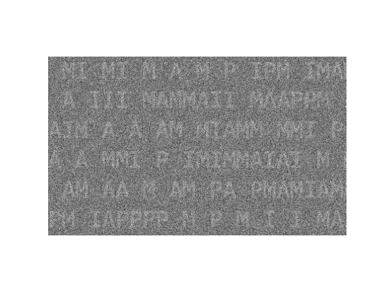

Note
Click here to download the full example code
DiCoDiLe on text images¶
This example illustrates pattern recovery on a noisy text image using DiCoDiLe algorithm.
import matplotlib.pyplot as plt
import numpy as np
from dicodile import dicodile
from dicodile.data.images import fetch_letters_pami
from dicodile.update_d.update_d import tukey_window
from dicodile.utils.csc import reconstruct
from dicodile.utils.dictionary import init_dictionary
from dicodile.utils.viz import display_dictionaries
We will first load PAMI image generated from a text of 5000 characters drawn uniformly from the 4 letters P A M I and 2 whitespaces and assign it to X.
We will also load the images of the four characters used to generate X and assign it to variable D.
X_original, D = fetch_letters_pami()
Out:
Downloading data from https://s3-eu-west-1.amazonaws.com/pfigshare-u-files/26750168/text_4_5000_PAMI.npz (17.8 MB)
file_sizes: 0%| | 0.00/18.6M [00:00<?, ?B/s]
file_sizes: 0%|1 | 73.7k/18.6M [00:00<00:48, 380kB/s]
file_sizes: 1%|3 | 205k/18.6M [00:00<00:33, 554kB/s]
file_sizes: 4%|#1 | 795k/18.6M [00:00<00:10, 1.69MB/s]
file_sizes: 11%|##9 | 2.11M/18.6M [00:00<00:03, 4.55MB/s]
file_sizes: 23%|#####8 | 4.20M/18.6M [00:00<00:01, 8.85MB/s]
file_sizes: 45%|###########7 | 8.40M/18.6M [00:00<00:00, 14.4MB/s]
file_sizes: 68%|#################5 | 12.6M/18.6M [00:01<00:00, 20.6MB/s]
file_sizes: 90%|#######################4 | 16.8M/18.6M [00:01<00:00, 25.4MB/s]
file_sizes: 100%|##########################| 18.6M/18.6M [00:01<00:00, 14.6MB/s]
Successfully downloaded file to /github/home/data/dicodile/images/text/text_4_5000_PAMI.npz
We will work on the copy X of the original image and we need to reshape image data X to fit to the expected signal shape of dicodile:
(n_channels, *sig_support)
Out:
(1, 2321, 2004)
Reshape D to fit to dictionary format:
(n_atoms, n_channels, *atom_support)
Out:
(4, 1, 37, 33)
Let’s display an extract of the original text image X_original and all the images of characters from D.
zoom_x = X_original[190:490, 250:750]
plt.axis('off')
plt.imshow(zoom_x, cmap='gray')
display_dictionaries(D)

Out:
<Figure size 640x480 with 4 Axes>
We add some Gaussian white noise with standard deviation std 3 times larger than X.std to X.
We will create a random dictionary of K = 10 patches from the noisy image.
# set number of patches
n_atoms = 10
# set individual atom (patch) size
atom_support = np.array(D.shape[-2:])
D_init = init_dictionary(X, n_atoms=n_atoms, atom_support=atom_support,
random_state=60)
# window the dictionary, this helps make sure that the border values are 0
atom_support = D_init.shape[-2:]
tw = tukey_window(atom_support)[None, None]
D_init *= tw
print(D_init.shape)
Out:
(10, 1, 37, 33)
Let’s display an extract of noisy X and random dictionary D_init generated from X.
- 
Out:
<Figure size 640x480 with 12 Axes>
Set model parameters.
# regularization parameter
reg = .2
# maximum number of iterations
n_iter = 100
# when True, makes sure that the borders of the atoms are 0
window = True
# when True, requires all activations Z to be positive
z_positive = True
# number of workers to be used for computations
n_workers = 10
# number of jobs per row
w_world = 'auto'
# tolerance for minimal update size
tol = 1e-3
Fit the dictionary with dicodile.
Out:
[DEBUG:DICODILE] Lambda_max = 24.284675821826074
Started 10 workers in 5.94s
[INFO:DICODILE] - CD iterations 0 / 100 (0s)
[DEBUG:DICODILE] lambda = 4.857e+00
[INFO:DICOD-10] converged in 4.000s (3.032s) with 25804 iterations (3134 updates).
[DEBUG:DICODILE] Objective (z) : 3.326e+06 (9s)
[PROGRESS:Update D] 3s - 1.00% iterations (2.642e+00)
[PROGRESS:Update D] 8s - 2.00% iterations (2.169e-03)
[PROGRESS:Update D] 10s - 3.00% iterations (1.076e-03)
[PROGRESS:Update D] 11s - 4.00% iterations (1.076e-03)
[PROGRESS:Update D] 11s - 5.00% iterations (1.076e-03)
[PROGRESS:Update D] 12s - 6.00% iterations (1.076e-03)
[PROGRESS:Update D] 13s - 7.00% iterations (1.076e-03)
[PROGRESS:Update D] 14s - 8.00% iterations (1.076e-03)
[PROGRESS:Update D] 15s - 9.00% iterations (1.076e-03)
[PROGRESS:Update D] 16s - 10.00% iterations (1.076e-03)
[PROGRESS:Update D] 17s - 11.00% iterations (1.076e-03)
[PROGRESS:Update D] 17s - 12.00% iterations (1.076e-03)
[PROGRESS:Update D] 18s - 13.00% iterations (1.076e-03)
[PROGRESS:Update D] 19s - 14.00% iterations (1.076e-03)
[PROGRESS:Update D] 20s - 15.00% iterations (1.076e-03)
[PROGRESS:Update D] 21s - 16.00% iterations (1.076e-03)
[PROGRESS:Update D] 22s - 17.00% iterations (1.076e-03)
[PROGRESS:Update D] 23s - 18.00% iterations (1.076e-03)
[PROGRESS:Update D] 24s - 19.00% iterations (1.076e-03)
[PROGRESS:Update D] 24s - 20.00% iterations (1.076e-03)
[PROGRESS:Update D] 25s - 21.00% iterations (1.076e-03)
[PROGRESS:Update D] 26s - 22.00% iterations (1.076e-03)
[PROGRESS:Update D] 27s - 23.00% iterations (1.076e-03)
[PROGRESS:Update D] 28s - 24.00% iterations (1.076e-03)
[PROGRESS:Update D] 29s - 25.00% iterations (1.076e-03)
[PROGRESS:Update D] 30s - 26.00% iterations (1.076e-03)
[PROGRESS:Update D] 31s - 27.00% iterations (1.076e-03)
[PROGRESS:Update D] 32s - 28.00% iterations (1.076e-03)
[PROGRESS:Update D] 33s - 29.00% iterations (1.076e-03)
[PROGRESS:Update D] 33s - 30.00% iterations (1.076e-03)
[PROGRESS:Update D] 34s - 31.00% iterations (1.076e-03)
[PROGRESS:Update D] 35s - 32.00% iterations (1.076e-03)
[PROGRESS:Update D] 36s - 33.00% iterations (1.076e-03)
[PROGRESS:Update D] 37s - 34.00% iterations (1.076e-03)
[PROGRESS:Update D] 38s - 35.00% iterations (1.076e-03)
[PROGRESS:Update D] 39s - 36.00% iterations (1.076e-03)
[PROGRESS:Update D] 40s - 37.00% iterations (1.076e-03)
[PROGRESS:Update D] 41s - 38.00% iterations (1.076e-03)
[PROGRESS:Update D] 41s - 39.00% iterations (1.076e-03)
[PROGRESS:Update D] 42s - 40.00% iterations (1.076e-03)
[PROGRESS:Update D] 43s - 41.00% iterations (1.076e-03)
[PROGRESS:Update D] 44s - 42.00% iterations (1.076e-03)
[PROGRESS:Update D] 45s - 43.00% iterations (1.076e-03)
[PROGRESS:Update D] 46s - 44.00% iterations (1.076e-03)
[PROGRESS:Update D] 47s - 45.00% iterations (1.076e-03)
[PROGRESS:Update D] 47s - 46.00% iterations (1.076e-03)
[PROGRESS:Update D] 48s - 47.00% iterations (1.076e-03)
[PROGRESS:Update D] 49s - 48.00% iterations (1.076e-03)
[PROGRESS:Update D] 50s - 49.00% iterations (1.076e-03)
[PROGRESS:Update D] 51s - 50.00% iterations (1.076e-03)
[PROGRESS:Update D] 52s - 51.00% iterations (1.076e-03)
[PROGRESS:Update D] 53s - 52.00% iterations (1.076e-03)
[PROGRESS:Update D] 54s - 53.00% iterations (1.076e-03)
[PROGRESS:Update D] 54s - 54.00% iterations (1.076e-03)
[PROGRESS:Update D] 55s - 55.00% iterations (1.076e-03)
[PROGRESS:Update D] 56s - 56.00% iterations (1.076e-03)
[PROGRESS:Update D] 57s - 57.00% iterations (1.076e-03)
[PROGRESS:Update D] 58s - 58.00% iterations (1.076e-03)
[PROGRESS:Update D] 59s - 59.00% iterations (1.076e-03)
[PROGRESS:Update D] 60s - 60.00% iterations (1.076e-03)
[PROGRESS:Update D] 61s - 61.00% iterations (1.076e-03)
[PROGRESS:Update D] 61s - 62.00% iterations (1.076e-03)
[PROGRESS:Update D] 62s - 63.00% iterations (1.076e-03)
[PROGRESS:Update D] 63s - 64.00% iterations (1.076e-03)
[PROGRESS:Update D] 64s - 65.00% iterations (1.076e-03)
[PROGRESS:Update D] 65s - 66.00% iterations (1.076e-03)
[PROGRESS:Update D] 66s - 67.00% iterations (1.076e-03)
[PROGRESS:Update D] 67s - 68.00% iterations (1.076e-03)
[PROGRESS:Update D] 68s - 69.00% iterations (1.076e-03)
[PROGRESS:Update D] 69s - 70.00% iterations (1.076e-03)
[PROGRESS:Update D] 69s - 71.00% iterations (1.076e-03)
[PROGRESS:Update D] 70s - 72.00% iterations (1.076e-03)
[PROGRESS:Update D] 71s - 73.00% iterations (1.076e-03)
[PROGRESS:Update D] 72s - 74.00% iterations (1.076e-03)
[PROGRESS:Update D] 73s - 75.00% iterations (1.076e-03)
[PROGRESS:Update D] 74s - 76.00% iterations (1.076e-03)
[PROGRESS:Update D] 75s - 77.00% iterations (1.076e-03)
[PROGRESS:Update D] 75s - 78.00% iterations (1.076e-03)
[PROGRESS:Update D] 76s - 79.00% iterations (1.076e-03)
[PROGRESS:Update D] 77s - 80.00% iterations (1.076e-03)
[PROGRESS:Update D] 78s - 81.00% iterations (1.076e-03)
[PROGRESS:Update D] 79s - 82.00% iterations (1.076e-03)
[PROGRESS:Update D] 80s - 83.00% iterations (1.076e-03)
[PROGRESS:Update D] 81s - 84.00% iterations (1.076e-03)
[PROGRESS:Update D] 82s - 85.00% iterations (1.076e-03)
[PROGRESS:Update D] 82s - 86.00% iterations (1.076e-03)
[PROGRESS:Update D] 83s - 87.00% iterations (1.076e-03)
[PROGRESS:Update D] 84s - 88.00% iterations (1.076e-03)
[PROGRESS:Update D] 85s - 89.00% iterations (1.076e-03)
[PROGRESS:Update D] 86s - 90.00% iterations (1.076e-03)
[PROGRESS:Update D] 87s - 91.00% iterations (1.076e-03)
[PROGRESS:Update D] 88s - 92.00% iterations (1.076e-03)
[PROGRESS:Update D] 89s - 93.00% iterations (1.076e-03)
[PROGRESS:Update D] 89s - 94.00% iterations (1.076e-03)
[PROGRESS:Update D] 90s - 95.00% iterations (1.076e-03)
[PROGRESS:Update D] 91s - 96.00% iterations (1.076e-03)
[PROGRESS:Update D] 92s - 97.00% iterations (1.076e-03)
[PROGRESS:Update D] 93s - 98.00% iterations (1.076e-03)
[PROGRESS:Update D] 94s - 99.00% iterations (1.076e-03)
[INFO:Update D] update did not converge
[INFO:Update D]: 100 iterations
[DEBUG:DICODILE] Objective (d) : 3.316e+06 (99s)
[INFO:DICODILE] - CD iterations 1 / 100 (117s)
[DEBUG:DICODILE] lambda = 4.857e+00
[INFO:DICOD-10] converged in 84.928s (71.170s) with 99990 iterations (91930 updates).
[DEBUG:DICODILE] Objective (z) : 3.236e+06 (94s)
[PROGRESS:Update D] 2s - 1.00% iterations (1.136e-02)
[PROGRESS:Update D] 4s - 2.00% iterations (2.402e-03)
[PROGRESS:Update D] 5s - 3.00% iterations (1.201e-03)
[PROGRESS:Update D] 7s - 4.00% iterations (2.537e-04)
[PROGRESS:Update D] 8s - 5.00% iterations (1.269e-04)
[PROGRESS:Update D] 9s - 6.00% iterations (1.269e-04)
[PROGRESS:Update D] 10s - 7.00% iterations (1.269e-04)
[PROGRESS:Update D] 11s - 8.00% iterations (1.269e-04)
[PROGRESS:Update D] 12s - 9.00% iterations (6.343e-05)
[PROGRESS:Update D] 13s - 10.00% iterations (6.343e-05)
[PROGRESS:Update D] 14s - 11.00% iterations (6.343e-05)
[PROGRESS:Update D] 14s - 12.00% iterations (6.343e-05)
[PROGRESS:Update D] 16s - 13.00% iterations (3.171e-05)
[PROGRESS:Update D] 16s - 14.00% iterations (3.171e-05)
[PROGRESS:Update D] 18s - 15.00% iterations (6.702e-06)
[INFO:Update D]: 16 iterations
[DEBUG:DICODILE] Objective (d) : 3.230e+06 (35s)
[INFO:DICODILE] - CD iterations 2 / 100 (255s)
[DEBUG:DICODILE] lambda = 4.857e+00
[INFO:DICOD-10] converged in 86.231s (71.776s) with 99990 iterations (91482 updates).
[DEBUG:DICODILE] Objective (z) : 3.211e+06 (97s)
[PROGRESS:Update D] 6s - 1.00% iterations (4.127e-02)
[PROGRESS:Update D] 9s - 2.00% iterations (1.090e-03)
[PROGRESS:Update D] 11s - 3.00% iterations (1.151e-04)
[PROGRESS:Update D] 13s - 4.00% iterations (5.757e-05)
[PROGRESS:Update D] 13s - 5.00% iterations (5.757e-05)
[PROGRESS:Update D] 14s - 6.00% iterations (5.757e-05)
[PROGRESS:Update D] 15s - 7.00% iterations (2.879e-05)
[PROGRESS:Update D] 16s - 8.00% iterations (2.879e-05)
[PROGRESS:Update D] 17s - 9.00% iterations (2.879e-05)
[PROGRESS:Update D] 18s - 10.00% iterations (2.879e-05)
[PROGRESS:Update D] 22s - 11.00% iterations (3.802e-07)
[INFO:Update D]: 12 iterations
[DEBUG:DICODILE] Objective (d) : 3.200e+06 (37s)
[INFO:DICODILE] - CD iterations 3 / 100 (399s)
[DEBUG:DICODILE] lambda = 4.857e+00
[INFO:DICOD-10] converged in 84.288s (71.295s) with 99990 iterations (89640 updates).
[DEBUG:DICODILE] Objective (z) : 3.189e+06 (96s)
[PROGRESS:Update D] 6s - 1.00% iterations (2.064e-02)
[PROGRESS:Update D] 9s - 2.00% iterations (2.725e-04)
[PROGRESS:Update D] 11s - 3.00% iterations (5.750e-05)
[PROGRESS:Update D] 12s - 4.00% iterations (5.750e-05)
[PROGRESS:Update D] 13s - 5.00% iterations (5.750e-05)
[PROGRESS:Update D] 14s - 6.00% iterations (5.750e-05)
[PROGRESS:Update D] 15s - 7.00% iterations (5.750e-05)
[PROGRESS:Update D] 15s - 8.00% iterations (5.750e-05)
[PROGRESS:Update D] 17s - 9.00% iterations (2.875e-05)
[PROGRESS:Update D] 18s - 10.00% iterations (2.875e-05)
[PROGRESS:Update D] 19s - 11.00% iterations (6.074e-06)
[INFO:Update D]: 12 iterations
[DEBUG:DICODILE] Objective (d) : 3.181e+06 (36s)
[INFO:DICODILE] - CD iterations 4 / 100 (541s)
[DEBUG:DICODILE] lambda = 4.857e+00
[INFO:DICOD-10] converged in 81.440s (68.771s) with 99990 iterations (87014 updates).
[DEBUG:DICODILE] Objective (z) : 3.175e+06 (93s)
[PROGRESS:Update D] 6s - 1.00% iterations (2.064e-02)
[PROGRESS:Update D] 10s - 2.00% iterations (1.362e-04)
[PROGRESS:Update D] 11s - 3.00% iterations (6.798e-05)
[PROGRESS:Update D] 12s - 4.00% iterations (6.798e-05)
[PROGRESS:Update D] 13s - 5.00% iterations (3.393e-05)
[PROGRESS:Update D] 14s - 6.00% iterations (3.393e-05)
[PROGRESS:Update D] 15s - 7.00% iterations (3.393e-05)
[PROGRESS:Update D] 15s - 8.00% iterations (3.393e-05)
[PROGRESS:Update D] 17s - 9.00% iterations (1.696e-05)
[PROGRESS:Update D] 18s - 10.00% iterations (1.696e-05)
[INFO:Update D]: 11 iterations
[DEBUG:DICODILE] Objective (d) : 3.170e+06 (35s)
[INFO:DICODILE] - CD iterations 5 / 100 (678s)
[DEBUG:DICODILE] lambda = 4.857e+00
[INFO:DICOD-10] converged in 78.860s (67.529s) with 99990 iterations (82411 updates).
[DEBUG:DICODILE] Objective (z) : 3.166e+06 (90s)
[PROGRESS:Update D] 7s - 1.00% iterations (2.580e-03)
[PROGRESS:Update D] 10s - 2.00% iterations (6.799e-05)
[PROGRESS:Update D] 11s - 3.00% iterations (6.799e-05)
[PROGRESS:Update D] 12s - 4.00% iterations (3.395e-05)
[PROGRESS:Update D] 13s - 5.00% iterations (3.395e-05)
[PROGRESS:Update D] 14s - 6.00% iterations (3.395e-05)
[PROGRESS:Update D] 15s - 7.00% iterations (3.395e-05)
[PROGRESS:Update D] 16s - 8.00% iterations (3.395e-05)
[PROGRESS:Update D] 17s - 9.00% iterations (1.697e-05)
[PROGRESS:Update D] 18s - 10.00% iterations (1.697e-05)
[INFO:Update D]: 11 iterations
[DEBUG:DICODILE] Objective (d) : 3.162e+06 (34s)
[INFO:DICODILE] - CD iterations 6 / 100 (811s)
[DEBUG:DICODILE] lambda = 4.857e+00
[INFO:DICOD-10] converged in 74.168s (62.997s) with 99990 iterations (76082 updates).
[DEBUG:DICODILE] Objective (z) : 3.160e+06 (86s)
[PROGRESS:Update D] 8s - 1.00% iterations (3.224e-04)
[PROGRESS:Update D] 11s - 2.00% iterations (3.392e-05)
[PROGRESS:Update D] 12s - 3.00% iterations (3.392e-05)
[PROGRESS:Update D] 12s - 4.00% iterations (3.392e-05)
[PROGRESS:Update D] 13s - 5.00% iterations (3.392e-05)
[PROGRESS:Update D] 14s - 6.00% iterations (3.392e-05)
[PROGRESS:Update D] 15s - 7.00% iterations (3.392e-05)
[PROGRESS:Update D] 16s - 8.00% iterations (3.392e-05)
[PROGRESS:Update D] 17s - 9.00% iterations (1.696e-05)
[PROGRESS:Update D] 18s - 10.00% iterations (1.696e-05)
[INFO:Update D]: 11 iterations
[DEBUG:DICODILE] Objective (d) : 3.157e+06 (34s)
[INFO:DICODILE] - CD iterations 7 / 100 (940s)
[DEBUG:DICODILE] lambda = 4.857e+00
[INFO:DICOD-10] converged in 68.592s (57.708s) with 99990 iterations (69754 updates).
[DEBUG:DICODILE] Objective (z) : 3.155e+06 (79s)
[PROGRESS:Update D] 9s - 1.00% iterations (1.612e-04)
[PROGRESS:Update D] 10s - 2.00% iterations (3.386e-05)
[PROGRESS:Update D] 11s - 3.00% iterations (3.386e-05)
[PROGRESS:Update D] 12s - 4.00% iterations (3.386e-05)
[PROGRESS:Update D] 13s - 5.00% iterations (3.386e-05)
[PROGRESS:Update D] 14s - 6.00% iterations (3.386e-05)
[PROGRESS:Update D] 15s - 7.00% iterations (3.386e-05)
[PROGRESS:Update D] 15s - 8.00% iterations (3.386e-05)
[PROGRESS:Update D] 17s - 9.00% iterations (1.693e-05)
[PROGRESS:Update D] 17s - 10.00% iterations (1.693e-05)
[INFO:Update D]: 11 iterations
[DEBUG:DICODILE] Objective (d) : 3.154e+06 (33s)
[INFO:DICODILE] - CD iterations 8 / 100 (1062s)
[DEBUG:DICODILE] lambda = 4.857e+00
[INFO:DICOD-10] converged in 63.700s (52.248s) with 99990 iterations (63574 updates).
[DEBUG:DICODILE] Objective (z) : 3.153e+06 (75s)
[PROGRESS:Update D] 8s - 1.00% iterations (6.449e-04)
[PROGRESS:Update D] 10s - 2.00% iterations (3.397e-05)
[PROGRESS:Update D] 11s - 3.00% iterations (3.397e-05)
[PROGRESS:Update D] 12s - 4.00% iterations (3.397e-05)
[PROGRESS:Update D] 13s - 5.00% iterations (3.397e-05)
[PROGRESS:Update D] 14s - 6.00% iterations (3.397e-05)
[PROGRESS:Update D] 15s - 7.00% iterations (3.397e-05)
[PROGRESS:Update D] 16s - 8.00% iterations (3.397e-05)
[PROGRESS:Update D] 17s - 9.00% iterations (1.698e-05)
[PROGRESS:Update D] 18s - 10.00% iterations (1.698e-05)
[INFO:Update D]: 11 iterations
[DEBUG:DICODILE] Objective (d) : 3.152e+06 (34s)
[INFO:DICODILE] - CD iterations 9 / 100 (1179s)
[DEBUG:DICODILE] lambda = 4.857e+00
[INFO:DICOD-10] converged in 59.716s (48.794s) with 99990 iterations (59580 updates).
[DEBUG:DICODILE] Objective (z) : 3.151e+06 (70s)
[PROGRESS:Update D] 7s - 1.00% iterations (5.159e-03)
[PROGRESS:Update D] 11s - 2.00% iterations (3.403e-05)
[PROGRESS:Update D] 11s - 3.00% iterations (3.403e-05)
[PROGRESS:Update D] 13s - 4.00% iterations (1.702e-05)
[PROGRESS:Update D] 14s - 5.00% iterations (1.702e-05)
[PROGRESS:Update D] 14s - 6.00% iterations (1.702e-05)
[PROGRESS:Update D] 15s - 7.00% iterations (1.702e-05)
[PROGRESS:Update D] 16s - 8.00% iterations (1.702e-05)
[PROGRESS:Update D] 17s - 9.00% iterations (1.702e-05)
[PROGRESS:Update D] 18s - 10.00% iterations (1.702e-05)
[PROGRESS:Update D] 19s - 11.00% iterations (1.702e-05)
[PROGRESS:Update D] 19s - 12.00% iterations (1.702e-05)
[PROGRESS:Update D] 20s - 13.00% iterations (1.702e-05)
[PROGRESS:Update D] 22s - 14.00% iterations (3.596e-06)
[PROGRESS:Update D] 23s - 15.00% iterations (3.596e-06)
[PROGRESS:Update D] 25s - 16.00% iterations (7.599e-07)
[PROGRESS:Update D] 26s - 17.00% iterations (1.606e-07)
[PROGRESS:Update D] 27s - 18.00% iterations (8.030e-08)
[PROGRESS:Update D] 29s - 19.00% iterations (4.015e-08)
[PROGRESS:Update D] 29s - 20.00% iterations (4.015e-08)
[PROGRESS:Update D] 32s - 21.00% iterations (4.242e-09)
[INFO:Update D]: 22 iterations
[DEBUG:DICODILE] Objective (d) : 3.150e+06 (40s)
[INFO:DICODILE] - CD iterations 10 / 100 (1299s)
[DEBUG:DICODILE] lambda = 4.857e+00
[INFO:DICOD-10] converged in 56.796s (47.232s) with 99990 iterations (56191 updates).
[DEBUG:DICODILE] Objective (z) : 3.149e+06 (68s)
[PROGRESS:Update D] 2s - 2.00% iterations (2.121e-07)
[PROGRESS:Update D] 3s - 3.00% iterations (2.121e-07)
[PROGRESS:Update D] 3s - 4.00% iterations (2.121e-07)
[PROGRESS:Update D] 4s - 5.00% iterations (2.121e-07)
[PROGRESS:Update D] 5s - 6.00% iterations (2.121e-07)
[PROGRESS:Update D] 6s - 7.00% iterations (2.121e-07)
[PROGRESS:Update D] 7s - 8.00% iterations (2.121e-07)
[PROGRESS:Update D] 8s - 9.00% iterations (2.121e-07)
[PROGRESS:Update D] 9s - 10.00% iterations (2.121e-07)
[PROGRESS:Update D] 10s - 11.00% iterations (2.121e-07)
[PROGRESS:Update D] 10s - 12.00% iterations (2.121e-07)
[PROGRESS:Update D] 11s - 13.00% iterations (2.121e-07)
[PROGRESS:Update D] 12s - 14.00% iterations (2.121e-07)
[PROGRESS:Update D] 13s - 15.00% iterations (2.121e-07)
[PROGRESS:Update D] 14s - 16.00% iterations (2.121e-07)
[PROGRESS:Update D] 15s - 17.00% iterations (2.121e-07)
[PROGRESS:Update D] 15s - 18.00% iterations (2.121e-07)
[PROGRESS:Update D] 16s - 19.00% iterations (2.121e-07)
[PROGRESS:Update D] 17s - 20.00% iterations (2.121e-07)
[PROGRESS:Update D] 18s - 21.00% iterations (2.121e-07)
[PROGRESS:Update D] 19s - 22.00% iterations (2.121e-07)
[PROGRESS:Update D] 20s - 23.00% iterations (2.121e-07)
[PROGRESS:Update D] 20s - 24.00% iterations (2.121e-07)
[PROGRESS:Update D] 21s - 25.00% iterations (2.121e-07)
[PROGRESS:Update D] 22s - 26.00% iterations (2.121e-07)
[PROGRESS:Update D] 23s - 27.00% iterations (2.121e-07)
[PROGRESS:Update D] 24s - 28.00% iterations (2.121e-07)
[PROGRESS:Update D] 25s - 29.00% iterations (2.121e-07)
[PROGRESS:Update D] 25s - 30.00% iterations (2.121e-07)
[PROGRESS:Update D] 26s - 31.00% iterations (2.121e-07)
[PROGRESS:Update D] 27s - 32.00% iterations (2.121e-07)
[PROGRESS:Update D] 28s - 33.00% iterations (2.121e-07)
[PROGRESS:Update D] 29s - 34.00% iterations (2.121e-07)
[PROGRESS:Update D] 30s - 35.00% iterations (2.121e-07)
[PROGRESS:Update D] 31s - 36.00% iterations (2.121e-07)
[PROGRESS:Update D] 31s - 37.00% iterations (2.121e-07)
[PROGRESS:Update D] 32s - 38.00% iterations (2.121e-07)
[PROGRESS:Update D] 33s - 39.00% iterations (2.121e-07)
[PROGRESS:Update D] 34s - 40.00% iterations (2.121e-07)
[PROGRESS:Update D] 35s - 41.00% iterations (2.121e-07)
[PROGRESS:Update D] 36s - 42.00% iterations (2.121e-07)
[PROGRESS:Update D] 37s - 43.00% iterations (2.121e-07)
[PROGRESS:Update D] 37s - 44.00% iterations (2.121e-07)
[PROGRESS:Update D] 38s - 45.00% iterations (2.121e-07)
[PROGRESS:Update D] 39s - 46.00% iterations (2.121e-07)
[PROGRESS:Update D] 40s - 47.00% iterations (2.121e-07)
[PROGRESS:Update D] 41s - 48.00% iterations (2.121e-07)
[PROGRESS:Update D] 42s - 49.00% iterations (2.121e-07)
[PROGRESS:Update D] 42s - 50.00% iterations (2.121e-07)
[PROGRESS:Update D] 43s - 51.00% iterations (2.121e-07)
[PROGRESS:Update D] 44s - 52.00% iterations (2.121e-07)
[PROGRESS:Update D] 45s - 53.00% iterations (2.121e-07)
[PROGRESS:Update D] 46s - 54.00% iterations (2.121e-07)
[PROGRESS:Update D] 46s - 55.00% iterations (2.121e-07)
[PROGRESS:Update D] 47s - 56.00% iterations (2.121e-07)
[PROGRESS:Update D] 48s - 57.00% iterations (2.121e-07)
[PROGRESS:Update D] 49s - 58.00% iterations (2.121e-07)
[PROGRESS:Update D] 50s - 59.00% iterations (2.121e-07)
[PROGRESS:Update D] 51s - 60.00% iterations (2.121e-07)
[PROGRESS:Update D] 52s - 61.00% iterations (2.121e-07)
[PROGRESS:Update D] 52s - 62.00% iterations (2.121e-07)
[PROGRESS:Update D] 53s - 63.00% iterations (2.121e-07)
[PROGRESS:Update D] 54s - 64.00% iterations (2.121e-07)
[PROGRESS:Update D] 55s - 65.00% iterations (2.121e-07)
[PROGRESS:Update D] 56s - 66.00% iterations (2.121e-07)
[PROGRESS:Update D] 57s - 67.00% iterations (2.121e-07)
[PROGRESS:Update D] 57s - 68.00% iterations (2.121e-07)
[PROGRESS:Update D] 58s - 69.00% iterations (2.121e-07)
[PROGRESS:Update D] 59s - 70.00% iterations (2.121e-07)
[PROGRESS:Update D] 60s - 71.00% iterations (2.121e-07)
[PROGRESS:Update D] 61s - 72.00% iterations (2.121e-07)
[PROGRESS:Update D] 62s - 73.00% iterations (2.121e-07)
[PROGRESS:Update D] 63s - 74.00% iterations (2.121e-07)
[PROGRESS:Update D] 63s - 75.00% iterations (2.121e-07)
[PROGRESS:Update D] 64s - 76.00% iterations (2.121e-07)
[PROGRESS:Update D] 65s - 77.00% iterations (2.121e-07)
[PROGRESS:Update D] 66s - 78.00% iterations (2.121e-07)
[PROGRESS:Update D] 67s - 79.00% iterations (2.121e-07)
[PROGRESS:Update D] 67s - 80.00% iterations (2.121e-07)
[PROGRESS:Update D] 68s - 81.00% iterations (2.121e-07)
[PROGRESS:Update D] 69s - 82.00% iterations (2.121e-07)
[PROGRESS:Update D] 70s - 83.00% iterations (2.121e-07)
[PROGRESS:Update D] 71s - 84.00% iterations (2.121e-07)
[PROGRESS:Update D] 72s - 85.00% iterations (2.121e-07)
[PROGRESS:Update D] 72s - 86.00% iterations (2.121e-07)
[PROGRESS:Update D] 73s - 87.00% iterations (2.121e-07)
[PROGRESS:Update D] 74s - 88.00% iterations (2.121e-07)
[PROGRESS:Update D] 75s - 89.00% iterations (2.121e-07)
[PROGRESS:Update D] 76s - 90.00% iterations (2.121e-07)
[PROGRESS:Update D] 77s - 91.00% iterations (2.121e-07)
[PROGRESS:Update D] 77s - 92.00% iterations (2.121e-07)
[PROGRESS:Update D] 78s - 93.00% iterations (2.121e-07)
[PROGRESS:Update D] 79s - 94.00% iterations (2.121e-07)
[PROGRESS:Update D] 80s - 95.00% iterations (2.121e-07)
[PROGRESS:Update D] 81s - 96.00% iterations (2.121e-07)
[PROGRESS:Update D] 82s - 97.00% iterations (2.121e-07)
[PROGRESS:Update D] 82s - 98.00% iterations (2.121e-07)
[PROGRESS:Update D] 83s - 99.00% iterations (2.121e-07)
[INFO:Update D] update did not converge
[INFO:Update D]: 100 iterations
[DEBUG:DICODILE] Objective (d) : 3.148e+06 (91s)
[INFO:DICODILE] - CD iterations 11 / 100 (1467s)
[DEBUG:DICODILE] lambda = 4.857e+00
[INFO:DICOD-10] converged in 36.828s (30.907s) with 99052 iterations (35718 updates).
[DEBUG:DICODILE] Objective (z) : 3.148e+06 (47s)
[PROGRESS:Update D] 2s - 2.00% iterations (2.121e-05)
[PROGRESS:Update D] 3s - 3.00% iterations (2.121e-05)
[PROGRESS:Update D] 3s - 4.00% iterations (2.121e-05)
[PROGRESS:Update D] 4s - 5.00% iterations (2.121e-05)
[PROGRESS:Update D] 5s - 6.00% iterations (2.121e-05)
[PROGRESS:Update D] 6s - 7.00% iterations (2.121e-05)
[PROGRESS:Update D] 7s - 8.00% iterations (2.121e-05)
[PROGRESS:Update D] 8s - 9.00% iterations (2.121e-05)
[PROGRESS:Update D] 8s - 10.00% iterations (2.121e-05)
[PROGRESS:Update D] 9s - 11.00% iterations (2.121e-05)
[PROGRESS:Update D] 10s - 12.00% iterations (2.121e-05)
[PROGRESS:Update D] 11s - 13.00% iterations (2.121e-05)
[PROGRESS:Update D] 12s - 14.00% iterations (2.121e-05)
[PROGRESS:Update D] 13s - 15.00% iterations (1.061e-05)
[PROGRESS:Update D] 15s - 16.00% iterations (2.241e-06)
[PROGRESS:Update D] 17s - 17.00% iterations (4.737e-07)
[PROGRESS:Update D] 18s - 18.00% iterations (1.001e-07)
[PROGRESS:Update D] 20s - 19.00% iterations (5.005e-08)
[PROGRESS:Update D] 21s - 20.00% iterations (2.503e-08)
[PROGRESS:Update D] 23s - 21.00% iterations (2.644e-09)
[PROGRESS:Update D] 24s - 22.00% iterations (1.322e-09)
[INFO:Update D]: 23 iterations
[DEBUG:DICODILE] Objective (d) : 3.148e+06 (33s)
[INFO:DICODILE] - CD iterations 12 / 100 (1557s)
[DEBUG:DICODILE] lambda = 4.857e+00
[INFO:DICOD-10] converged in 48.872s (39.862s) with 99990 iterations (47636 updates).
[DEBUG:DICODILE] Objective (z) : 3.147e+06 (60s)
[PROGRESS:Update D] 2s - 2.00% iterations (2.794e-08)
[PROGRESS:Update D] 3s - 3.00% iterations (2.794e-08)
[PROGRESS:Update D] 4s - 4.00% iterations (2.794e-08)
[PROGRESS:Update D] 5s - 5.00% iterations (2.794e-08)
[PROGRESS:Update D] 5s - 6.00% iterations (2.794e-08)
[PROGRESS:Update D] 6s - 7.00% iterations (2.794e-08)
[PROGRESS:Update D] 7s - 8.00% iterations (2.794e-08)
[PROGRESS:Update D] 8s - 9.00% iterations (2.794e-08)
[PROGRESS:Update D] 9s - 10.00% iterations (2.794e-08)
[PROGRESS:Update D] 10s - 11.00% iterations (2.794e-08)
[PROGRESS:Update D] 11s - 12.00% iterations (2.794e-08)
[PROGRESS:Update D] 12s - 13.00% iterations (2.794e-08)
[PROGRESS:Update D] 13s - 14.00% iterations (2.794e-08)
[PROGRESS:Update D] 13s - 15.00% iterations (2.794e-08)
[PROGRESS:Update D] 14s - 16.00% iterations (2.794e-08)
[PROGRESS:Update D] 15s - 17.00% iterations (2.794e-08)
[PROGRESS:Update D] 16s - 18.00% iterations (2.794e-08)
[PROGRESS:Update D] 17s - 19.00% iterations (2.794e-08)
[PROGRESS:Update D] 18s - 20.00% iterations (2.794e-08)
[PROGRESS:Update D] 18s - 21.00% iterations (2.794e-08)
[PROGRESS:Update D] 19s - 22.00% iterations (2.794e-08)
[PROGRESS:Update D] 20s - 23.00% iterations (2.794e-08)
[PROGRESS:Update D] 21s - 24.00% iterations (2.794e-08)
[PROGRESS:Update D] 22s - 25.00% iterations (2.794e-08)
[PROGRESS:Update D] 23s - 26.00% iterations (2.794e-08)
[PROGRESS:Update D] 24s - 27.00% iterations (2.794e-08)
[PROGRESS:Update D] 25s - 28.00% iterations (2.794e-08)
[PROGRESS:Update D] 26s - 29.00% iterations (2.794e-08)
[PROGRESS:Update D] 26s - 30.00% iterations (2.794e-08)
[PROGRESS:Update D] 27s - 31.00% iterations (2.794e-08)
[PROGRESS:Update D] 28s - 32.00% iterations (2.794e-08)
[PROGRESS:Update D] 29s - 33.00% iterations (2.794e-08)
[PROGRESS:Update D] 30s - 34.00% iterations (2.794e-08)
[PROGRESS:Update D] 30s - 35.00% iterations (2.794e-08)
[PROGRESS:Update D] 31s - 36.00% iterations (2.794e-08)
[PROGRESS:Update D] 32s - 37.00% iterations (2.794e-08)
[PROGRESS:Update D] 33s - 38.00% iterations (2.794e-08)
[PROGRESS:Update D] 34s - 39.00% iterations (2.794e-08)
[PROGRESS:Update D] 35s - 40.00% iterations (2.794e-08)
[PROGRESS:Update D] 36s - 41.00% iterations (2.794e-08)
[PROGRESS:Update D] 36s - 42.00% iterations (2.794e-08)
[PROGRESS:Update D] 37s - 43.00% iterations (2.794e-08)
[PROGRESS:Update D] 38s - 44.00% iterations (2.794e-08)
[PROGRESS:Update D] 39s - 45.00% iterations (2.794e-08)
[PROGRESS:Update D] 40s - 46.00% iterations (2.794e-08)
[PROGRESS:Update D] 41s - 47.00% iterations (2.794e-08)
[PROGRESS:Update D] 42s - 48.00% iterations (2.794e-08)
[PROGRESS:Update D] 42s - 49.00% iterations (2.794e-08)
[PROGRESS:Update D] 43s - 50.00% iterations (2.794e-08)
[PROGRESS:Update D] 44s - 51.00% iterations (2.794e-08)
[PROGRESS:Update D] 45s - 52.00% iterations (2.794e-08)
[PROGRESS:Update D] 46s - 53.00% iterations (2.794e-08)
[PROGRESS:Update D] 47s - 54.00% iterations (2.794e-08)
[PROGRESS:Update D] 48s - 55.00% iterations (2.794e-08)
[PROGRESS:Update D] 48s - 56.00% iterations (2.794e-08)
[PROGRESS:Update D] 49s - 57.00% iterations (2.794e-08)
[PROGRESS:Update D] 50s - 58.00% iterations (2.794e-08)
[PROGRESS:Update D] 51s - 59.00% iterations (2.794e-08)
[PROGRESS:Update D] 52s - 60.00% iterations (2.794e-08)
[PROGRESS:Update D] 53s - 61.00% iterations (2.794e-08)
[PROGRESS:Update D] 54s - 62.00% iterations (2.794e-08)
[PROGRESS:Update D] 54s - 63.00% iterations (2.794e-08)
[PROGRESS:Update D] 55s - 64.00% iterations (2.794e-08)
[PROGRESS:Update D] 56s - 65.00% iterations (2.794e-08)
[PROGRESS:Update D] 57s - 66.00% iterations (2.794e-08)
[PROGRESS:Update D] 58s - 67.00% iterations (2.794e-08)
[PROGRESS:Update D] 59s - 68.00% iterations (2.794e-08)
[PROGRESS:Update D] 59s - 69.00% iterations (2.794e-08)
[PROGRESS:Update D] 60s - 70.00% iterations (2.794e-08)
[PROGRESS:Update D] 61s - 71.00% iterations (2.794e-08)
[PROGRESS:Update D] 62s - 72.00% iterations (2.794e-08)
[PROGRESS:Update D] 63s - 73.00% iterations (2.794e-08)
[PROGRESS:Update D] 64s - 74.00% iterations (2.794e-08)
[PROGRESS:Update D] 64s - 75.00% iterations (2.794e-08)
[PROGRESS:Update D] 65s - 76.00% iterations (2.794e-08)
[PROGRESS:Update D] 66s - 77.00% iterations (2.794e-08)
[PROGRESS:Update D] 67s - 78.00% iterations (2.794e-08)
[PROGRESS:Update D] 68s - 79.00% iterations (2.794e-08)
[PROGRESS:Update D] 69s - 80.00% iterations (2.794e-08)
[PROGRESS:Update D] 69s - 81.00% iterations (2.794e-08)
[PROGRESS:Update D] 70s - 82.00% iterations (2.794e-08)
[PROGRESS:Update D] 71s - 83.00% iterations (2.794e-08)
[PROGRESS:Update D] 72s - 84.00% iterations (2.794e-08)
[PROGRESS:Update D] 73s - 85.00% iterations (2.794e-08)
[PROGRESS:Update D] 74s - 86.00% iterations (2.794e-08)
[PROGRESS:Update D] 74s - 87.00% iterations (2.794e-08)
[PROGRESS:Update D] 75s - 88.00% iterations (2.794e-08)
[PROGRESS:Update D] 76s - 89.00% iterations (2.794e-08)
[PROGRESS:Update D] 77s - 90.00% iterations (2.794e-08)
[PROGRESS:Update D] 78s - 91.00% iterations (2.794e-08)
[PROGRESS:Update D] 79s - 92.00% iterations (2.794e-08)
[PROGRESS:Update D] 80s - 93.00% iterations (2.794e-08)
[PROGRESS:Update D] 81s - 94.00% iterations (2.794e-08)
[PROGRESS:Update D] 81s - 95.00% iterations (2.794e-08)
[PROGRESS:Update D] 82s - 96.00% iterations (2.794e-08)
[PROGRESS:Update D] 83s - 97.00% iterations (2.794e-08)
[PROGRESS:Update D] 84s - 98.00% iterations (2.794e-08)
[PROGRESS:Update D] 85s - 99.00% iterations (2.794e-08)
[INFO:Update D] update did not converge
[INFO:Update D]: 100 iterations
[DEBUG:DICODILE] Objective (d) : 3.147e+06 (93s)
[INFO:DICODILE] - CD iterations 13 / 100 (1719s)
[DEBUG:DICODILE] lambda = 4.857e+00
[INFO:DICOD-10] converged in 11.448s (9.660s) with 49681 iterations (10331 updates).
[DEBUG:DICODILE] Objective (z) : 3.147e+06 (22s)
[PROGRESS:Update D] 2s - 2.00% iterations (2.794e-06)
[PROGRESS:Update D] 3s - 3.00% iterations (2.794e-06)
[PROGRESS:Update D] 3s - 4.00% iterations (2.794e-06)
[PROGRESS:Update D] 4s - 5.00% iterations (2.794e-06)
[PROGRESS:Update D] 5s - 6.00% iterations (2.794e-06)
[PROGRESS:Update D] 6s - 7.00% iterations (2.794e-06)
[PROGRESS:Update D] 7s - 8.00% iterations (2.794e-06)
[PROGRESS:Update D] 8s - 9.00% iterations (2.794e-06)
[PROGRESS:Update D] 9s - 10.00% iterations (2.794e-06)
[PROGRESS:Update D] 9s - 11.00% iterations (2.794e-06)
[PROGRESS:Update D] 10s - 12.00% iterations (2.794e-06)
[PROGRESS:Update D] 11s - 13.00% iterations (2.794e-06)
[PROGRESS:Update D] 12s - 14.00% iterations (2.794e-06)
[PROGRESS:Update D] 13s - 15.00% iterations (2.794e-06)
[PROGRESS:Update D] 14s - 16.00% iterations (2.794e-06)
[PROGRESS:Update D] 14s - 17.00% iterations (2.794e-06)
[PROGRESS:Update D] 15s - 18.00% iterations (2.794e-06)
[PROGRESS:Update D] 16s - 19.00% iterations (2.794e-06)
[PROGRESS:Update D] 17s - 20.00% iterations (2.794e-06)
[PROGRESS:Update D] 18s - 21.00% iterations (2.794e-06)
[PROGRESS:Update D] 19s - 22.00% iterations (2.794e-06)
[PROGRESS:Update D] 20s - 23.00% iterations (2.794e-06)
[PROGRESS:Update D] 20s - 24.00% iterations (2.794e-06)
[PROGRESS:Update D] 21s - 25.00% iterations (2.794e-06)
[PROGRESS:Update D] 22s - 26.00% iterations (2.794e-06)
[PROGRESS:Update D] 23s - 27.00% iterations (2.794e-06)
[PROGRESS:Update D] 24s - 28.00% iterations (2.794e-06)
[PROGRESS:Update D] 25s - 29.00% iterations (2.794e-06)
[PROGRESS:Update D] 26s - 30.00% iterations (2.794e-06)
[PROGRESS:Update D] 27s - 31.00% iterations (2.794e-06)
[PROGRESS:Update D] 28s - 32.00% iterations (2.794e-06)
[PROGRESS:Update D] 29s - 33.00% iterations (2.794e-06)
[PROGRESS:Update D] 30s - 34.00% iterations (2.794e-06)
[PROGRESS:Update D] 31s - 35.00% iterations (2.794e-06)
[PROGRESS:Update D] 32s - 36.00% iterations (2.794e-06)
[PROGRESS:Update D] 33s - 37.00% iterations (2.794e-06)
[PROGRESS:Update D] 33s - 38.00% iterations (2.794e-06)
[PROGRESS:Update D] 34s - 39.00% iterations (2.794e-06)
[PROGRESS:Update D] 35s - 40.00% iterations (2.794e-06)
[PROGRESS:Update D] 36s - 41.00% iterations (2.794e-06)
[PROGRESS:Update D] 37s - 42.00% iterations (2.794e-06)
[PROGRESS:Update D] 38s - 43.00% iterations (2.794e-06)
[PROGRESS:Update D] 39s - 44.00% iterations (2.794e-06)
[PROGRESS:Update D] 40s - 45.00% iterations (2.794e-06)
[PROGRESS:Update D] 41s - 46.00% iterations (2.794e-06)
[PROGRESS:Update D] 42s - 47.00% iterations (2.794e-06)
[PROGRESS:Update D] 43s - 48.00% iterations (2.794e-06)
[PROGRESS:Update D] 44s - 49.00% iterations (2.794e-06)
[PROGRESS:Update D] 45s - 50.00% iterations (2.794e-06)
[PROGRESS:Update D] 46s - 51.00% iterations (2.794e-06)
[PROGRESS:Update D] 47s - 52.00% iterations (2.794e-06)
[PROGRESS:Update D] 48s - 53.00% iterations (2.794e-06)
[PROGRESS:Update D] 49s - 54.00% iterations (2.794e-06)
[PROGRESS:Update D] 50s - 55.00% iterations (2.794e-06)
[PROGRESS:Update D] 51s - 56.00% iterations (2.794e-06)
[PROGRESS:Update D] 51s - 57.00% iterations (2.794e-06)
[PROGRESS:Update D] 52s - 58.00% iterations (2.794e-06)
[PROGRESS:Update D] 53s - 59.00% iterations (2.794e-06)
[PROGRESS:Update D] 54s - 60.00% iterations (2.794e-06)
[PROGRESS:Update D] 55s - 61.00% iterations (2.794e-06)
[PROGRESS:Update D] 56s - 62.00% iterations (2.794e-06)
[PROGRESS:Update D] 57s - 63.00% iterations (2.794e-06)
[PROGRESS:Update D] 58s - 64.00% iterations (2.794e-06)
[PROGRESS:Update D] 59s - 65.00% iterations (2.794e-06)
[PROGRESS:Update D] 60s - 66.00% iterations (2.794e-06)
[PROGRESS:Update D] 61s - 67.00% iterations (2.794e-06)
[PROGRESS:Update D] 62s - 68.00% iterations (2.794e-06)
[PROGRESS:Update D] 63s - 69.00% iterations (2.794e-06)
[PROGRESS:Update D] 64s - 70.00% iterations (2.794e-06)
[PROGRESS:Update D] 65s - 71.00% iterations (2.794e-06)
[PROGRESS:Update D] 65s - 72.00% iterations (2.794e-06)
[PROGRESS:Update D] 66s - 73.00% iterations (2.794e-06)
[PROGRESS:Update D] 67s - 74.00% iterations (2.794e-06)
[PROGRESS:Update D] 68s - 75.00% iterations (2.794e-06)
[PROGRESS:Update D] 69s - 76.00% iterations (2.794e-06)
[PROGRESS:Update D] 70s - 77.00% iterations (2.794e-06)
[PROGRESS:Update D] 71s - 78.00% iterations (2.794e-06)
[PROGRESS:Update D] 72s - 79.00% iterations (2.794e-06)
[PROGRESS:Update D] 73s - 80.00% iterations (2.794e-06)
[PROGRESS:Update D] 74s - 81.00% iterations (2.794e-06)
[PROGRESS:Update D] 75s - 82.00% iterations (2.794e-06)
[PROGRESS:Update D] 76s - 83.00% iterations (2.794e-06)
[PROGRESS:Update D] 77s - 84.00% iterations (2.794e-06)
[PROGRESS:Update D] 77s - 85.00% iterations (2.794e-06)
[PROGRESS:Update D] 78s - 86.00% iterations (2.794e-06)
[PROGRESS:Update D] 79s - 87.00% iterations (2.794e-06)
[PROGRESS:Update D] 80s - 88.00% iterations (2.794e-06)
[PROGRESS:Update D] 81s - 89.00% iterations (2.794e-06)
[PROGRESS:Update D] 82s - 90.00% iterations (2.794e-06)
[PROGRESS:Update D] 83s - 91.00% iterations (2.794e-06)
[PROGRESS:Update D] 84s - 92.00% iterations (2.794e-06)
[PROGRESS:Update D] 85s - 93.00% iterations (1.397e-06)
[PROGRESS:Update D] 87s - 94.00% iterations (2.952e-07)
[PROGRESS:Update D] 89s - 95.00% iterations (3.120e-08)
[PROGRESS:Update D] 91s - 96.00% iterations (1.560e-08)
[PROGRESS:Update D] 92s - 97.00% iterations (7.799e-09)
[INFO:Update D]: 98 iterations
[DEBUG:DICODILE] Objective (d) : 3.147e+06 (102s)
[INFO:DICODILE] - CD iterations 14 / 100 (1852s)
[DEBUG:DICODILE] lambda = 4.857e+00
[INFO:DICOD-10] converged in 45.964s (38.592s) with 99990 iterations (43786 updates).
[DEBUG:DICODILE] Objective (z) : 3.146e+06 (57s)
[PROGRESS:Update D] 2s - 2.00% iterations (8.241e-08)
[PROGRESS:Update D] 3s - 3.00% iterations (8.241e-08)
[PROGRESS:Update D] 4s - 4.00% iterations (8.241e-08)
[PROGRESS:Update D] 4s - 5.00% iterations (8.241e-08)
[PROGRESS:Update D] 5s - 6.00% iterations (8.241e-08)
[PROGRESS:Update D] 6s - 7.00% iterations (8.241e-08)
[PROGRESS:Update D] 7s - 8.00% iterations (8.241e-08)
[PROGRESS:Update D] 8s - 9.00% iterations (8.241e-08)
[PROGRESS:Update D] 9s - 10.00% iterations (8.241e-08)
[PROGRESS:Update D] 10s - 11.00% iterations (8.241e-08)
[PROGRESS:Update D] 11s - 12.00% iterations (8.241e-08)
[PROGRESS:Update D] 11s - 13.00% iterations (8.241e-08)
[PROGRESS:Update D] 12s - 14.00% iterations (8.241e-08)
[PROGRESS:Update D] 13s - 15.00% iterations (8.241e-08)
[PROGRESS:Update D] 14s - 16.00% iterations (8.241e-08)
[PROGRESS:Update D] 15s - 17.00% iterations (8.241e-08)
[PROGRESS:Update D] 16s - 18.00% iterations (8.241e-08)
[PROGRESS:Update D] 17s - 19.00% iterations (8.241e-08)
[PROGRESS:Update D] 18s - 20.00% iterations (8.241e-08)
[PROGRESS:Update D] 19s - 21.00% iterations (8.241e-08)
[PROGRESS:Update D] 19s - 22.00% iterations (8.241e-08)
[PROGRESS:Update D] 20s - 23.00% iterations (8.241e-08)
[PROGRESS:Update D] 21s - 24.00% iterations (8.241e-08)
[PROGRESS:Update D] 22s - 25.00% iterations (8.241e-08)
[PROGRESS:Update D] 23s - 26.00% iterations (8.241e-08)
[PROGRESS:Update D] 24s - 27.00% iterations (8.241e-08)
[PROGRESS:Update D] 25s - 28.00% iterations (8.241e-08)
[PROGRESS:Update D] 26s - 29.00% iterations (8.241e-08)
[PROGRESS:Update D] 27s - 30.00% iterations (8.241e-08)
[PROGRESS:Update D] 27s - 31.00% iterations (8.241e-08)
[PROGRESS:Update D] 28s - 32.00% iterations (8.241e-08)
[PROGRESS:Update D] 29s - 33.00% iterations (8.241e-08)
[PROGRESS:Update D] 30s - 34.00% iterations (8.241e-08)
[PROGRESS:Update D] 31s - 35.00% iterations (8.241e-08)
[PROGRESS:Update D] 32s - 36.00% iterations (8.241e-08)
[PROGRESS:Update D] 33s - 37.00% iterations (8.241e-08)
[PROGRESS:Update D] 33s - 38.00% iterations (8.241e-08)
[PROGRESS:Update D] 34s - 39.00% iterations (8.241e-08)
[PROGRESS:Update D] 35s - 40.00% iterations (8.241e-08)
[PROGRESS:Update D] 36s - 41.00% iterations (8.241e-08)
[PROGRESS:Update D] 37s - 42.00% iterations (8.241e-08)
[PROGRESS:Update D] 38s - 43.00% iterations (8.241e-08)
[PROGRESS:Update D] 39s - 44.00% iterations (8.241e-08)
[PROGRESS:Update D] 39s - 45.00% iterations (8.241e-08)
[PROGRESS:Update D] 40s - 46.00% iterations (8.241e-08)
[PROGRESS:Update D] 41s - 47.00% iterations (8.241e-08)
[PROGRESS:Update D] 42s - 48.00% iterations (8.241e-08)
[PROGRESS:Update D] 43s - 49.00% iterations (8.241e-08)
[PROGRESS:Update D] 44s - 50.00% iterations (8.241e-08)
[PROGRESS:Update D] 45s - 51.00% iterations (8.241e-08)
[PROGRESS:Update D] 45s - 52.00% iterations (8.241e-08)
[PROGRESS:Update D] 46s - 53.00% iterations (8.241e-08)
[PROGRESS:Update D] 47s - 54.00% iterations (8.241e-08)
[PROGRESS:Update D] 48s - 55.00% iterations (8.241e-08)
[PROGRESS:Update D] 49s - 56.00% iterations (8.241e-08)
[PROGRESS:Update D] 50s - 57.00% iterations (8.241e-08)
[PROGRESS:Update D] 51s - 58.00% iterations (8.241e-08)
[PROGRESS:Update D] 52s - 59.00% iterations (8.241e-08)
[PROGRESS:Update D] 52s - 60.00% iterations (8.241e-08)
[PROGRESS:Update D] 53s - 61.00% iterations (8.241e-08)
[PROGRESS:Update D] 54s - 62.00% iterations (8.241e-08)
[PROGRESS:Update D] 55s - 63.00% iterations (8.241e-08)
[PROGRESS:Update D] 56s - 64.00% iterations (8.241e-08)
[PROGRESS:Update D] 57s - 65.00% iterations (8.241e-08)
[PROGRESS:Update D] 57s - 66.00% iterations (8.241e-08)
[PROGRESS:Update D] 58s - 67.00% iterations (8.241e-08)
[PROGRESS:Update D] 59s - 68.00% iterations (8.241e-08)
[PROGRESS:Update D] 60s - 69.00% iterations (8.241e-08)
[PROGRESS:Update D] 61s - 70.00% iterations (8.241e-08)
[PROGRESS:Update D] 62s - 71.00% iterations (8.241e-08)
[PROGRESS:Update D] 63s - 72.00% iterations (8.241e-08)
[PROGRESS:Update D] 63s - 73.00% iterations (8.241e-08)
[PROGRESS:Update D] 64s - 74.00% iterations (8.241e-08)
[PROGRESS:Update D] 65s - 75.00% iterations (8.241e-08)
[PROGRESS:Update D] 66s - 76.00% iterations (8.241e-08)
[PROGRESS:Update D] 67s - 77.00% iterations (8.241e-08)
[PROGRESS:Update D] 68s - 78.00% iterations (8.241e-08)
[PROGRESS:Update D] 68s - 79.00% iterations (8.241e-08)
[PROGRESS:Update D] 69s - 80.00% iterations (8.241e-08)
[PROGRESS:Update D] 70s - 81.00% iterations (8.241e-08)
[PROGRESS:Update D] 71s - 82.00% iterations (8.241e-08)
[PROGRESS:Update D] 72s - 83.00% iterations (8.241e-08)
[PROGRESS:Update D] 73s - 84.00% iterations (8.241e-08)
[PROGRESS:Update D] 74s - 85.00% iterations (8.241e-08)
[PROGRESS:Update D] 74s - 86.00% iterations (8.241e-08)
[PROGRESS:Update D] 75s - 87.00% iterations (8.241e-08)
[PROGRESS:Update D] 76s - 88.00% iterations (8.241e-08)
[PROGRESS:Update D] 77s - 89.00% iterations (8.241e-08)
[PROGRESS:Update D] 78s - 90.00% iterations (8.241e-08)
[PROGRESS:Update D] 79s - 91.00% iterations (8.241e-08)
[PROGRESS:Update D] 80s - 92.00% iterations (8.241e-08)
[PROGRESS:Update D] 81s - 93.00% iterations (8.241e-08)
[PROGRESS:Update D] 81s - 94.00% iterations (8.241e-08)
[PROGRESS:Update D] 82s - 95.00% iterations (8.241e-08)
[PROGRESS:Update D] 83s - 96.00% iterations (8.241e-08)
[PROGRESS:Update D] 84s - 97.00% iterations (8.241e-08)
[PROGRESS:Update D] 85s - 98.00% iterations (8.241e-08)
[PROGRESS:Update D] 86s - 99.00% iterations (8.241e-08)
[INFO:Update D] update did not converge
[INFO:Update D]: 100 iterations
[DEBUG:DICODILE] Objective (d) : 3.146e+06 (94s)
[INFO:DICODILE] - CD iterations 15 / 100 (2012s)
[DEBUG:DICODILE] lambda = 4.857e+00
[INFO:DICOD-10] converged in 19.560s (16.976s) with 73016 iterations (17893 updates).
[DEBUG:DICODILE] Objective (z) : 3.146e+06 (30s)
[PROGRESS:Update D] 2s - 2.00% iterations (8.241e-06)
[PROGRESS:Update D] 3s - 3.00% iterations (8.241e-06)
[PROGRESS:Update D] 3s - 4.00% iterations (8.241e-06)
[PROGRESS:Update D] 4s - 5.00% iterations (8.241e-06)
[PROGRESS:Update D] 5s - 6.00% iterations (8.241e-06)
[PROGRESS:Update D] 6s - 7.00% iterations (8.241e-06)
[PROGRESS:Update D] 7s - 8.00% iterations (8.241e-06)
[PROGRESS:Update D] 8s - 9.00% iterations (8.241e-06)
[PROGRESS:Update D] 9s - 10.00% iterations (8.241e-06)
[PROGRESS:Update D] 9s - 11.00% iterations (8.241e-06)
[PROGRESS:Update D] 10s - 12.00% iterations (8.241e-06)
[PROGRESS:Update D] 11s - 13.00% iterations (8.241e-06)
[PROGRESS:Update D] 12s - 14.00% iterations (8.241e-06)
[PROGRESS:Update D] 13s - 15.00% iterations (8.241e-06)
[PROGRESS:Update D] 14s - 16.00% iterations (8.241e-06)
[PROGRESS:Update D] 15s - 17.00% iterations (8.241e-06)
[PROGRESS:Update D] 16s - 18.00% iterations (8.241e-06)
[PROGRESS:Update D] 16s - 19.00% iterations (8.241e-06)
[PROGRESS:Update D] 17s - 20.00% iterations (8.241e-06)
[PROGRESS:Update D] 18s - 21.00% iterations (8.241e-06)
[PROGRESS:Update D] 19s - 22.00% iterations (8.241e-06)
[PROGRESS:Update D] 20s - 23.00% iterations (8.241e-06)
[PROGRESS:Update D] 21s - 24.00% iterations (8.241e-06)
[PROGRESS:Update D] 22s - 25.00% iterations (8.241e-06)
[PROGRESS:Update D] 22s - 26.00% iterations (8.241e-06)
[PROGRESS:Update D] 23s - 27.00% iterations (8.241e-06)
[PROGRESS:Update D] 24s - 28.00% iterations (8.241e-06)
[PROGRESS:Update D] 26s - 29.00% iterations (1.742e-06)
[PROGRESS:Update D] 27s - 30.00% iterations (8.708e-07)
[PROGRESS:Update D] 28s - 31.00% iterations (4.354e-07)
[PROGRESS:Update D] 30s - 32.00% iterations (4.601e-08)
[PROGRESS:Update D] 32s - 33.00% iterations (2.300e-08)
[INFO:Update D]: 34 iterations
[DEBUG:DICODILE] Objective (d) : 3.146e+06 (43s)
[INFO:DICODILE] - CD iterations 16 / 100 (2094s)
[DEBUG:DICODILE] lambda = 4.857e+00
[INFO:DICOD-10] converged in 43.048s (36.588s) with 99921 iterations (41054 updates).
[DEBUG:DICODILE] Objective (z) : 3.146e+06 (54s)
[PROGRESS:Update D] 2s - 2.00% iterations (1.519e-08)
[PROGRESS:Update D] 3s - 3.00% iterations (1.519e-08)
[PROGRESS:Update D] 3s - 4.00% iterations (1.519e-08)
[PROGRESS:Update D] 4s - 5.00% iterations (1.519e-08)
[PROGRESS:Update D] 5s - 6.00% iterations (1.519e-08)
[PROGRESS:Update D] 6s - 7.00% iterations (1.519e-08)
[PROGRESS:Update D] 7s - 8.00% iterations (1.519e-08)
[PROGRESS:Update D] 8s - 9.00% iterations (1.519e-08)
[PROGRESS:Update D] 8s - 10.00% iterations (1.519e-08)
[PROGRESS:Update D] 9s - 11.00% iterations (1.519e-08)
[PROGRESS:Update D] 10s - 12.00% iterations (1.519e-08)
[PROGRESS:Update D] 11s - 13.00% iterations (1.519e-08)
[PROGRESS:Update D] 12s - 14.00% iterations (1.519e-08)
[PROGRESS:Update D] 13s - 15.00% iterations (1.519e-08)
[PROGRESS:Update D] 14s - 16.00% iterations (1.519e-08)
[PROGRESS:Update D] 15s - 17.00% iterations (1.519e-08)
[PROGRESS:Update D] 15s - 18.00% iterations (1.519e-08)
[PROGRESS:Update D] 16s - 19.00% iterations (1.519e-08)
[PROGRESS:Update D] 17s - 20.00% iterations (1.519e-08)
[PROGRESS:Update D] 18s - 21.00% iterations (1.519e-08)
[PROGRESS:Update D] 19s - 22.00% iterations (1.519e-08)
[PROGRESS:Update D] 20s - 23.00% iterations (1.519e-08)
[PROGRESS:Update D] 21s - 24.00% iterations (1.519e-08)
[PROGRESS:Update D] 22s - 25.00% iterations (1.519e-08)
[PROGRESS:Update D] 23s - 26.00% iterations (1.519e-08)
[PROGRESS:Update D] 23s - 27.00% iterations (1.519e-08)
[PROGRESS:Update D] 24s - 28.00% iterations (1.519e-08)
[PROGRESS:Update D] 25s - 29.00% iterations (1.519e-08)
[PROGRESS:Update D] 26s - 30.00% iterations (1.519e-08)
[PROGRESS:Update D] 27s - 31.00% iterations (1.519e-08)
[PROGRESS:Update D] 28s - 32.00% iterations (1.519e-08)
[PROGRESS:Update D] 29s - 33.00% iterations (1.519e-08)
[PROGRESS:Update D] 30s - 34.00% iterations (1.519e-08)
[PROGRESS:Update D] 31s - 35.00% iterations (1.519e-08)
[PROGRESS:Update D] 32s - 36.00% iterations (1.519e-08)
[PROGRESS:Update D] 32s - 37.00% iterations (1.519e-08)
[PROGRESS:Update D] 33s - 38.00% iterations (1.519e-08)
[PROGRESS:Update D] 34s - 39.00% iterations (1.519e-08)
[PROGRESS:Update D] 35s - 40.00% iterations (1.519e-08)
[PROGRESS:Update D] 36s - 41.00% iterations (1.519e-08)
[PROGRESS:Update D] 37s - 42.00% iterations (1.519e-08)
[PROGRESS:Update D] 38s - 43.00% iterations (1.519e-08)
[PROGRESS:Update D] 39s - 44.00% iterations (1.519e-08)
[PROGRESS:Update D] 39s - 45.00% iterations (1.519e-08)
[PROGRESS:Update D] 40s - 46.00% iterations (1.519e-08)
[PROGRESS:Update D] 41s - 47.00% iterations (1.519e-08)
[PROGRESS:Update D] 42s - 48.00% iterations (1.519e-08)
[PROGRESS:Update D] 43s - 49.00% iterations (1.519e-08)
[PROGRESS:Update D] 44s - 50.00% iterations (1.519e-08)
[PROGRESS:Update D] 45s - 51.00% iterations (1.519e-08)
[PROGRESS:Update D] 45s - 52.00% iterations (1.519e-08)
[PROGRESS:Update D] 46s - 53.00% iterations (1.519e-08)
[PROGRESS:Update D] 47s - 54.00% iterations (1.519e-08)
[PROGRESS:Update D] 48s - 55.00% iterations (1.519e-08)
[PROGRESS:Update D] 49s - 56.00% iterations (1.519e-08)
[PROGRESS:Update D] 50s - 57.00% iterations (1.519e-08)
[PROGRESS:Update D] 51s - 58.00% iterations (1.519e-08)
[PROGRESS:Update D] 52s - 59.00% iterations (1.519e-08)
[PROGRESS:Update D] 52s - 60.00% iterations (1.519e-08)
[PROGRESS:Update D] 53s - 61.00% iterations (1.519e-08)
[PROGRESS:Update D] 54s - 62.00% iterations (1.519e-08)
[PROGRESS:Update D] 55s - 63.00% iterations (1.519e-08)
[PROGRESS:Update D] 56s - 64.00% iterations (1.519e-08)
[PROGRESS:Update D] 57s - 65.00% iterations (1.519e-08)
[PROGRESS:Update D] 58s - 66.00% iterations (1.519e-08)
[PROGRESS:Update D] 58s - 67.00% iterations (1.519e-08)
[PROGRESS:Update D] 59s - 68.00% iterations (1.519e-08)
[PROGRESS:Update D] 60s - 69.00% iterations (1.519e-08)
[PROGRESS:Update D] 61s - 70.00% iterations (1.519e-08)
[PROGRESS:Update D] 62s - 71.00% iterations (1.519e-08)
[PROGRESS:Update D] 63s - 72.00% iterations (1.519e-08)
[PROGRESS:Update D] 64s - 73.00% iterations (1.519e-08)
[PROGRESS:Update D] 65s - 74.00% iterations (1.519e-08)
[PROGRESS:Update D] 65s - 75.00% iterations (1.519e-08)
[PROGRESS:Update D] 66s - 76.00% iterations (1.519e-08)
[PROGRESS:Update D] 67s - 77.00% iterations (1.519e-08)
[PROGRESS:Update D] 68s - 78.00% iterations (1.519e-08)
[PROGRESS:Update D] 69s - 79.00% iterations (1.519e-08)
[PROGRESS:Update D] 70s - 80.00% iterations (1.519e-08)
[PROGRESS:Update D] 70s - 81.00% iterations (1.519e-08)
[PROGRESS:Update D] 71s - 82.00% iterations (1.519e-08)
[PROGRESS:Update D] 72s - 83.00% iterations (1.519e-08)
[PROGRESS:Update D] 73s - 84.00% iterations (1.519e-08)
[PROGRESS:Update D] 74s - 85.00% iterations (1.519e-08)
[PROGRESS:Update D] 75s - 86.00% iterations (1.519e-08)
[PROGRESS:Update D] 76s - 87.00% iterations (1.519e-08)
[PROGRESS:Update D] 77s - 88.00% iterations (1.519e-08)
[PROGRESS:Update D] 77s - 89.00% iterations (1.519e-08)
[PROGRESS:Update D] 78s - 90.00% iterations (1.519e-08)
[PROGRESS:Update D] 79s - 91.00% iterations (1.519e-08)
[PROGRESS:Update D] 80s - 92.00% iterations (1.519e-08)
[PROGRESS:Update D] 81s - 93.00% iterations (1.519e-08)
[PROGRESS:Update D] 82s - 94.00% iterations (1.519e-08)
[PROGRESS:Update D] 83s - 95.00% iterations (1.519e-08)
[PROGRESS:Update D] 83s - 96.00% iterations (1.519e-08)
[PROGRESS:Update D] 84s - 97.00% iterations (1.519e-08)
[PROGRESS:Update D] 85s - 98.00% iterations (1.519e-08)
[PROGRESS:Update D] 86s - 99.00% iterations (1.519e-08)
[INFO:Update D] update did not converge
[INFO:Update D]: 100 iterations
[DEBUG:DICODILE] Objective (d) : 3.146e+06 (94s)
[INFO:DICODILE] - CD iterations 17 / 100 (2252s)
[DEBUG:DICODILE] lambda = 4.857e+00
[INFO:DICOD-10] converged in 6.584s (5.303s) with 47747 iterations (5037 updates).
[DEBUG:DICODILE] Objective (z) : 3.146e+06 (17s)
[PROGRESS:Update D] 2s - 2.00% iterations (1.519e-06)
[PROGRESS:Update D] 2s - 3.00% iterations (1.519e-06)
[PROGRESS:Update D] 3s - 4.00% iterations (1.519e-06)
[PROGRESS:Update D] 4s - 5.00% iterations (1.519e-06)
[PROGRESS:Update D] 5s - 6.00% iterations (1.519e-06)
[PROGRESS:Update D] 6s - 7.00% iterations (1.519e-06)
[PROGRESS:Update D] 7s - 8.00% iterations (1.519e-06)
[PROGRESS:Update D] 8s - 9.00% iterations (1.519e-06)
[PROGRESS:Update D] 9s - 10.00% iterations (1.519e-06)
[PROGRESS:Update D] 10s - 11.00% iterations (1.519e-06)
[PROGRESS:Update D] 11s - 12.00% iterations (1.519e-06)
[PROGRESS:Update D] 11s - 13.00% iterations (1.519e-06)
[PROGRESS:Update D] 12s - 14.00% iterations (1.519e-06)
[PROGRESS:Update D] 13s - 15.00% iterations (1.519e-06)
[PROGRESS:Update D] 14s - 16.00% iterations (1.519e-06)
[PROGRESS:Update D] 15s - 17.00% iterations (1.519e-06)
[PROGRESS:Update D] 16s - 18.00% iterations (1.519e-06)
[PROGRESS:Update D] 17s - 19.00% iterations (1.519e-06)
[PROGRESS:Update D] 18s - 20.00% iterations (1.519e-06)
[PROGRESS:Update D] 19s - 21.00% iterations (1.519e-06)
[PROGRESS:Update D] 20s - 22.00% iterations (1.519e-06)
[PROGRESS:Update D] 20s - 23.00% iterations (1.519e-06)
[PROGRESS:Update D] 21s - 24.00% iterations (1.519e-06)
[PROGRESS:Update D] 22s - 25.00% iterations (1.519e-06)
[PROGRESS:Update D] 23s - 26.00% iterations (1.519e-06)
[PROGRESS:Update D] 24s - 27.00% iterations (1.519e-06)
[PROGRESS:Update D] 25s - 28.00% iterations (1.519e-06)
[PROGRESS:Update D] 26s - 29.00% iterations (1.519e-06)
[PROGRESS:Update D] 27s - 30.00% iterations (1.519e-06)
[PROGRESS:Update D] 28s - 31.00% iterations (1.519e-06)
[PROGRESS:Update D] 29s - 32.00% iterations (1.519e-06)
[PROGRESS:Update D] 29s - 33.00% iterations (1.519e-06)
[PROGRESS:Update D] 30s - 34.00% iterations (1.519e-06)
[PROGRESS:Update D] 31s - 35.00% iterations (1.519e-06)
[PROGRESS:Update D] 32s - 36.00% iterations (1.519e-06)
[PROGRESS:Update D] 33s - 37.00% iterations (1.519e-06)
[PROGRESS:Update D] 34s - 38.00% iterations (1.519e-06)
[PROGRESS:Update D] 35s - 39.00% iterations (1.519e-06)
[PROGRESS:Update D] 36s - 40.00% iterations (1.519e-06)
[PROGRESS:Update D] 36s - 41.00% iterations (1.519e-06)
[PROGRESS:Update D] 37s - 42.00% iterations (1.519e-06)
[PROGRESS:Update D] 38s - 43.00% iterations (1.519e-06)
[PROGRESS:Update D] 39s - 44.00% iterations (1.519e-06)
[PROGRESS:Update D] 40s - 45.00% iterations (1.519e-06)
[PROGRESS:Update D] 41s - 46.00% iterations (1.519e-06)
[PROGRESS:Update D] 42s - 47.00% iterations (1.519e-06)
[PROGRESS:Update D] 43s - 48.00% iterations (1.519e-06)
[PROGRESS:Update D] 43s - 49.00% iterations (1.519e-06)
[PROGRESS:Update D] 44s - 50.00% iterations (1.519e-06)
[PROGRESS:Update D] 45s - 51.00% iterations (1.519e-06)
[PROGRESS:Update D] 46s - 52.00% iterations (1.519e-06)
[PROGRESS:Update D] 47s - 53.00% iterations (1.519e-06)
[PROGRESS:Update D] 48s - 54.00% iterations (1.519e-06)
[PROGRESS:Update D] 49s - 55.00% iterations (1.519e-06)
[PROGRESS:Update D] 50s - 56.00% iterations (1.519e-06)
[PROGRESS:Update D] 51s - 57.00% iterations (1.519e-06)
[PROGRESS:Update D] 51s - 58.00% iterations (1.519e-06)
[PROGRESS:Update D] 52s - 59.00% iterations (1.519e-06)
[PROGRESS:Update D] 53s - 60.00% iterations (1.519e-06)
[PROGRESS:Update D] 54s - 61.00% iterations (1.519e-06)
[PROGRESS:Update D] 55s - 62.00% iterations (1.519e-06)
[PROGRESS:Update D] 56s - 63.00% iterations (1.519e-06)
[PROGRESS:Update D] 57s - 64.00% iterations (1.519e-06)
[PROGRESS:Update D] 58s - 65.00% iterations (1.519e-06)
[PROGRESS:Update D] 59s - 66.00% iterations (1.519e-06)
[PROGRESS:Update D] 59s - 67.00% iterations (1.519e-06)
[PROGRESS:Update D] 60s - 68.00% iterations (1.519e-06)
[PROGRESS:Update D] 61s - 69.00% iterations (1.519e-06)
[PROGRESS:Update D] 62s - 70.00% iterations (1.519e-06)
[PROGRESS:Update D] 63s - 71.00% iterations (1.519e-06)
[PROGRESS:Update D] 64s - 72.00% iterations (1.519e-06)
[PROGRESS:Update D] 65s - 73.00% iterations (1.519e-06)
[PROGRESS:Update D] 66s - 74.00% iterations (1.519e-06)
[PROGRESS:Update D] 67s - 75.00% iterations (1.519e-06)
[PROGRESS:Update D] 68s - 76.00% iterations (1.519e-06)
[PROGRESS:Update D] 68s - 77.00% iterations (1.519e-06)
[PROGRESS:Update D] 69s - 78.00% iterations (1.519e-06)
[PROGRESS:Update D] 70s - 79.00% iterations (1.519e-06)
[PROGRESS:Update D] 71s - 80.00% iterations (1.519e-06)
[PROGRESS:Update D] 72s - 81.00% iterations (1.519e-06)
[PROGRESS:Update D] 73s - 82.00% iterations (1.519e-06)
[PROGRESS:Update D] 74s - 83.00% iterations (1.519e-06)
[PROGRESS:Update D] 75s - 84.00% iterations (1.519e-06)
[PROGRESS:Update D] 76s - 85.00% iterations (1.519e-06)
[PROGRESS:Update D] 77s - 86.00% iterations (1.519e-06)
[PROGRESS:Update D] 78s - 87.00% iterations (1.519e-06)
[PROGRESS:Update D] 79s - 88.00% iterations (1.519e-06)
[PROGRESS:Update D] 79s - 89.00% iterations (1.519e-06)
[PROGRESS:Update D] 80s - 90.00% iterations (1.519e-06)
[PROGRESS:Update D] 81s - 91.00% iterations (1.519e-06)
[PROGRESS:Update D] 82s - 92.00% iterations (1.519e-06)
[PROGRESS:Update D] 83s - 93.00% iterations (1.519e-06)
[PROGRESS:Update D] 84s - 94.00% iterations (1.519e-06)
[PROGRESS:Update D] 85s - 95.00% iterations (1.519e-06)
[PROGRESS:Update D] 86s - 96.00% iterations (1.519e-06)
[PROGRESS:Update D] 86s - 97.00% iterations (1.519e-06)
[PROGRESS:Update D] 87s - 98.00% iterations (1.519e-06)
[PROGRESS:Update D] 88s - 99.00% iterations (1.519e-06)
[INFO:Update D] update did not converge
[INFO:Update D]: 100 iterations
[DEBUG:DICODILE] Objective (d) : 3.146e+06 (96s)
[INFO:DICODILE] - CD iterations 18 / 100 (2375s)
[DEBUG:DICODILE] lambda = 4.857e+00
[INFO:DICOD-10] converged in 39.316s (34.128s) with 99981 iterations (36598 updates).
[DEBUG:DICODILE] Objective (z) : 3.145e+06 (50s)
[PROGRESS:Update D] 2s - 2.00% iterations (1.519e-04)
[PROGRESS:Update D] 4s - 3.00% iterations (1.605e-05)
[INFO:Update D]: 4 iterations
[DEBUG:DICODILE] Objective (d) : 3.145e+06 (21s)
[INFO:DICODILE] - CD iterations 19 / 100 (2455s)
[DEBUG:DICODILE] lambda = 4.857e+00
[INFO:DICOD-10] converged in 35.744s (29.785s) with 99380 iterations (33826 updates).
[DEBUG:DICODILE] Objective (z) : 3.145e+06 (46s)
[PROGRESS:Update D] 9s - 1.00% iterations (1.612e-04)
[PROGRESS:Update D] 10s - 2.00% iterations (1.612e-04)
[PROGRESS:Update D] 13s - 3.00% iterations (8.516e-06)
[INFO:Update D]: 4 iterations
[DEBUG:DICODILE] Objective (d) : 3.145e+06 (29s)
[INFO:DICODILE] - CD iterations 20 / 100 (2539s)
[DEBUG:DICODILE] lambda = 4.857e+00
[INFO:DICOD-10] converged in 31.900s (26.640s) with 98712 iterations (29572 updates).
[DEBUG:DICODILE] Objective (z) : 3.145e+06 (43s)
[PROGRESS:Update D] 9s - 1.00% iterations (8.061e-05)
[PROGRESS:Update D] 10s - 2.00% iterations (8.061e-05)
[PROGRESS:Update D] 12s - 3.00% iterations (8.516e-06)
[INFO:Update D]: 4 iterations
[DEBUG:DICODILE] Objective (d) : 3.145e+06 (28s)
[INFO:DICODILE] - CD iterations 21 / 100 (2619s)
[DEBUG:DICODILE] lambda = 4.857e+00
[INFO:DICOD-10] converged in 29.848s (25.292s) with 93781 iterations (27671 updates).
[DEBUG:DICODILE] Objective (z) : 3.145e+06 (40s)
[PROGRESS:Update D] 9s - 1.00% iterations (8.061e-05)
[PROGRESS:Update D] 10s - 2.00% iterations (8.061e-05)
[PROGRESS:Update D] 13s - 3.00% iterations (4.258e-06)
[INFO:Update D]: 4 iterations
[DEBUG:DICODILE] Objective (d) : 3.145e+06 (28s)
[INFO:DICODILE] - CD iterations 22 / 100 (2697s)
[DEBUG:DICODILE] lambda = 4.857e+00
[INFO:DICOD-10] converged in 27.128s (22.603s) with 90879 iterations (24950 updates).
[DEBUG:DICODILE] Objective (z) : 3.145e+06 (38s)
[PROGRESS:Update D] 10s - 1.00% iterations (8.061e-05)
[PROGRESS:Update D] 11s - 2.00% iterations (8.061e-05)
[PROGRESS:Update D] 13s - 3.00% iterations (8.516e-06)
[INFO:Update D]: 4 iterations
[DEBUG:DICODILE] Objective (d) : 3.145e+06 (28s)
[INFO:DICODILE] - CD iterations 23 / 100 (2773s)
[DEBUG:DICODILE] lambda = 4.857e+00
[INFO:DICOD-10] converged in 26.208s (21.756s) with 93056 iterations (23832 updates).
[DEBUG:DICODILE] Objective (z) : 3.145e+06 (37s)
[PROGRESS:Update D] 9s - 1.00% iterations (8.061e-05)
[PROGRESS:Update D] 10s - 2.00% iterations (8.061e-05)
[PROGRESS:Update D] 12s - 3.00% iterations (8.516e-06)
[INFO:Update D]: 4 iterations
[DEBUG:DICODILE] Objective (d) : 3.145e+06 (28s)
[INFO:DICODILE] - CD iterations 24 / 100 (2847s)
[DEBUG:DICODILE] lambda = 4.857e+00
[INFO:DICOD-10] converged in 24.155s (20.335s) with 80974 iterations (22235 updates).
[DEBUG:DICODILE] Objective (z) : 3.144e+06 (35s)
[PROGRESS:Update D] 9s - 1.00% iterations (8.061e-05)
[PROGRESS:Update D] 10s - 2.00% iterations (8.061e-05)
[PROGRESS:Update D] 12s - 3.00% iterations (8.516e-06)
[INFO:Update D]: 4 iterations
[DEBUG:DICODILE] Objective (d) : 3.144e+06 (28s)
[INFO:DICODILE] - CD iterations 25 / 100 (2919s)
[DEBUG:DICODILE] lambda = 4.857e+00
[INFO:DICOD-10] converged in 22.856s (19.397s) with 76928 iterations (21116 updates).
[DEBUG:DICODILE] Objective (z) : 3.144e+06 (33s)
[PROGRESS:Update D] 9s - 1.00% iterations (1.612e-04)
[PROGRESS:Update D] 10s - 2.00% iterations (1.612e-04)
[PROGRESS:Update D] 12s - 3.00% iterations (1.703e-05)
[PROGRESS:Update D] 15s - 4.00% iterations (1.799e-06)
[INFO:Update D]: 5 iterations
[DEBUG:DICODILE] Objective (d) : 3.144e+06 (30s)
[INFO:DICODILE] - CD iterations 26 / 100 (2991s)
[DEBUG:DICODILE] lambda = 4.857e+00
[INFO:DICOD-10] converged in 24.000s (20.486s) with 82297 iterations (21929 updates).
[DEBUG:DICODILE] Objective (z) : 3.144e+06 (35s)
[PROGRESS:Update D] 9s - 1.00% iterations (3.225e-04)
[PROGRESS:Update D] 9s - 2.00% iterations (3.225e-04)
[PROGRESS:Update D] 12s - 3.00% iterations (1.703e-05)
[INFO:Update D]: 4 iterations
[DEBUG:DICODILE] Objective (d) : 3.144e+06 (28s)
[INFO:DICODILE] - CD iterations 27 / 100 (3064s)
[DEBUG:DICODILE] lambda = 4.857e+00
[INFO:DICOD-10] converged in 22.552s (18.795s) with 77255 iterations (20711 updates).
[DEBUG:DICODILE] Objective (z) : 3.144e+06 (33s)
[PROGRESS:Update D] 9s - 1.00% iterations (3.225e-04)
[PROGRESS:Update D] 10s - 2.00% iterations (3.225e-04)
[PROGRESS:Update D] 12s - 3.00% iterations (3.406e-05)
[PROGRESS:Update D] 12s - 4.00% iterations (3.406e-05)
[INFO:Update D]: 5 iterations
[DEBUG:DICODILE] Objective (d) : 3.144e+06 (29s)
[INFO:DICODILE] - CD iterations 28 / 100 (3136s)
[DEBUG:DICODILE] lambda = 4.857e+00
[INFO:DICOD-10] converged in 23.584s (20.330s) with 85938 iterations (21488 updates).
[DEBUG:DICODILE] Objective (z) : 3.144e+06 (34s)
[PROGRESS:Update D] 9s - 1.00% iterations (3.225e-04)
[PROGRESS:Update D] 10s - 2.00% iterations (1.612e-04)
[PROGRESS:Update D] 12s - 3.00% iterations (1.703e-05)
[PROGRESS:Update D] 13s - 4.00% iterations (1.703e-05)
[INFO:Update D]: 5 iterations
[DEBUG:DICODILE] Objective (d) : 3.144e+06 (29s)
[INFO:DICODILE] - CD iterations 29 / 100 (3208s)
[DEBUG:DICODILE] lambda = 4.857e+00
[INFO:DICOD-10] converged in 23.900s (20.470s) with 88877 iterations (21862 updates).
[DEBUG:DICODILE] Objective (z) : 3.144e+06 (34s)
[PROGRESS:Update D] 8s - 1.00% iterations (6.449e-04)
[PROGRESS:Update D] 10s - 2.00% iterations (1.363e-04)
[PROGRESS:Update D] 12s - 3.00% iterations (1.440e-05)
[INFO:Update D]: 4 iterations
[DEBUG:DICODILE] Objective (d) : 3.144e+06 (28s)
[INFO:DICODILE] - CD iterations 30 / 100 (3280s)
[DEBUG:DICODILE] lambda = 4.857e+00
[INFO:DICOD-10] converged in 22.256s (18.820s) with 81299 iterations (20572 updates).
[DEBUG:DICODILE] Objective (z) : 3.144e+06 (33s)
[PROGRESS:Update D] 9s - 1.00% iterations (3.225e-04)
[PROGRESS:Update D] 10s - 2.00% iterations (1.612e-04)
[PROGRESS:Update D] 12s - 3.00% iterations (1.703e-05)
[PROGRESS:Update D] 13s - 4.00% iterations (1.703e-05)
[INFO:Update D]: 5 iterations
[DEBUG:DICODILE] Objective (d) : 3.144e+06 (29s)
[INFO:DICODILE] - CD iterations 31 / 100 (3352s)
[DEBUG:DICODILE] lambda = 4.857e+00
[INFO:DICOD-10] converged in 24.244s (20.659s) with 80036 iterations (22299 updates).
[DEBUG:DICODILE] Objective (z) : 3.144e+06 (35s)
[PROGRESS:Update D] 8s - 1.00% iterations (6.449e-04)
[PROGRESS:Update D] 10s - 2.00% iterations (1.363e-04)
[PROGRESS:Update D] 12s - 3.00% iterations (1.440e-05)
[PROGRESS:Update D] 15s - 4.00% iterations (3.803e-07)
[PROGRESS:Update D] 17s - 5.00% iterations (4.019e-08)
[INFO:Update D]: 6 iterations
[DEBUG:DICODILE] Objective (d) : 3.144e+06 (30s)
[INFO:DICODILE] - CD iterations 32 / 100 (3426s)
[DEBUG:DICODILE] lambda = 4.857e+00
[INFO:DICOD-10] converged in 22.876s (18.781s) with 83259 iterations (21257 updates).
[DEBUG:DICODILE] Objective (z) : 3.144e+06 (34s)
[PROGRESS:Update D] 8s - 1.00% iterations (3.225e-04)
[PROGRESS:Update D] 10s - 2.00% iterations (1.612e-04)
[PROGRESS:Update D] 12s - 3.00% iterations (1.703e-05)
[PROGRESS:Update D] 13s - 4.00% iterations (1.703e-05)
[INFO:Update D]: 5 iterations
[DEBUG:DICODILE] Objective (d) : 3.144e+06 (29s)
[INFO:DICODILE] - CD iterations 33 / 100 (3497s)
[DEBUG:DICODILE] lambda = 4.857e+00
[INFO:DICOD-10] converged in 25.044s (21.046s) with 85929 iterations (23176 updates).
[DEBUG:DICODILE] Objective (z) : 3.144e+06 (36s)
[PROGRESS:Update D] 8s - 1.00% iterations (3.225e-04)
[PROGRESS:Update D] 10s - 2.00% iterations (1.612e-04)
[PROGRESS:Update D] 11s - 3.00% iterations (1.703e-05)
[PROGRESS:Update D] 12s - 4.00% iterations (1.703e-05)
[INFO:Update D]: 5 iterations
[DEBUG:DICODILE] Objective (d) : 3.144e+06 (29s)
[INFO:DICODILE] - CD iterations 34 / 100 (3571s)
[DEBUG:DICODILE] lambda = 4.857e+00
[INFO:DICOD-10] converged in 25.900s (21.666s) with 87082 iterations (23904 updates).
[DEBUG:DICODILE] Objective (z) : 3.144e+06 (37s)
[PROGRESS:Update D] 8s - 1.00% iterations (3.225e-04)
[PROGRESS:Update D] 10s - 2.00% iterations (1.612e-04)
[PROGRESS:Update D] 12s - 3.00% iterations (1.703e-05)
[PROGRESS:Update D] 13s - 4.00% iterations (1.703e-05)
[INFO:Update D]: 5 iterations
[DEBUG:DICODILE] Objective (d) : 3.144e+06 (29s)
[INFO:DICODILE] - CD iterations 35 / 100 (3646s)
[DEBUG:DICODILE] lambda = 4.857e+00
[INFO:DICOD-10] converged in 26.896s (22.425s) with 96569 iterations (24328 updates).
[DEBUG:DICODILE] Objective (z) : 3.144e+06 (38s)
[PROGRESS:Update D] 8s - 1.00% iterations (3.225e-04)
[PROGRESS:Update D] 10s - 2.00% iterations (1.612e-04)
[PROGRESS:Update D] 12s - 3.00% iterations (1.703e-05)
[PROGRESS:Update D] 13s - 4.00% iterations (1.703e-05)
[INFO:Update D]: 5 iterations
[DEBUG:DICODILE] Objective (d) : 3.144e+06 (29s)
[INFO:DICODILE] - CD iterations 36 / 100 (3722s)
[DEBUG:DICODILE] lambda = 4.857e+00
[INFO:DICOD-10] converged in 26.776s (22.026s) with 95618 iterations (24541 updates).
[DEBUG:DICODILE] Objective (z) : 3.143e+06 (38s)
[PROGRESS:Update D] 8s - 1.00% iterations (3.225e-04)
[PROGRESS:Update D] 10s - 2.00% iterations (1.612e-04)
[PROGRESS:Update D] 12s - 3.00% iterations (1.703e-05)
[PROGRESS:Update D] 13s - 4.00% iterations (1.703e-05)
[INFO:Update D]: 5 iterations
[DEBUG:DICODILE] Objective (d) : 3.143e+06 (29s)
[INFO:DICODILE] - CD iterations 37 / 100 (3798s)
[DEBUG:DICODILE] lambda = 4.857e+00
[INFO:DICOD-10] converged in 26.744s (22.019s) with 95918 iterations (24478 updates).
[DEBUG:DICODILE] Objective (z) : 3.143e+06 (37s)
[PROGRESS:Update D] 8s - 1.00% iterations (6.449e-04)
[PROGRESS:Update D] 10s - 2.00% iterations (1.363e-04)
[PROGRESS:Update D] 12s - 3.00% iterations (2.879e-05)
[PROGRESS:Update D] 12s - 4.00% iterations (2.879e-05)
[INFO:Update D]: 5 iterations
[DEBUG:DICODILE] Objective (d) : 3.143e+06 (29s)
[INFO:DICODILE] - CD iterations 38 / 100 (3874s)
[DEBUG:DICODILE] lambda = 4.857e+00
[INFO:DICOD-10] converged in 27.074s (22.173s) with 96509 iterations (24806 updates).
[DEBUG:DICODILE] Objective (z) : 3.143e+06 (38s)
[PROGRESS:Update D] 9s - 1.00% iterations (3.225e-04)
[PROGRESS:Update D] 11s - 2.00% iterations (6.814e-05)
[PROGRESS:Update D] 13s - 3.00% iterations (1.440e-05)
[PROGRESS:Update D] 15s - 4.00% iterations (1.521e-06)
[INFO:Update D]: 5 iterations
[DEBUG:DICODILE] Objective (d) : 3.143e+06 (31s)
[INFO:DICODILE] - CD iterations 39 / 100 (3952s)
[DEBUG:DICODILE] lambda = 4.857e+00
[INFO:DICOD-10] converged in 25.796s (21.329s) with 94350 iterations (23030 updates).
[DEBUG:DICODILE] Objective (z) : 3.143e+06 (37s)
[PROGRESS:Update D] 9s - 1.00% iterations (3.225e-04)
[PROGRESS:Update D] 11s - 2.00% iterations (6.814e-05)
[PROGRESS:Update D] 12s - 3.00% iterations (1.440e-05)
[PROGRESS:Update D] 14s - 4.00% iterations (7.199e-06)
[PROGRESS:Update D] 18s - 5.00% iterations (1.189e-08)
[INFO:Update D]: 6 iterations
[DEBUG:DICODILE] Objective (d) : 3.143e+06 (28s)
[INFO:DICODILE] - CD iterations 40 / 100 (4026s)
[DEBUG:DICODILE] lambda = 4.857e+00
[INFO:DICOD-10] converged in 25.388s (20.646s) with 94255 iterations (22732 updates).
[DEBUG:DICODILE] Objective (z) : 3.143e+06 (36s)
[PROGRESS:Update D] 2s - 2.00% iterations (1.256e-07)
[PROGRESS:Update D] 3s - 3.00% iterations (1.256e-07)
[PROGRESS:Update D] 3s - 4.00% iterations (1.256e-07)
[PROGRESS:Update D] 4s - 5.00% iterations (1.256e-07)
[PROGRESS:Update D] 5s - 6.00% iterations (1.256e-07)
[PROGRESS:Update D] 6s - 7.00% iterations (1.256e-07)
[PROGRESS:Update D] 7s - 8.00% iterations (1.256e-07)
[PROGRESS:Update D] 8s - 9.00% iterations (1.256e-07)
[PROGRESS:Update D] 9s - 10.00% iterations (1.256e-07)
[PROGRESS:Update D] 9s - 11.00% iterations (1.256e-07)
[PROGRESS:Update D] 10s - 12.00% iterations (1.256e-07)
[PROGRESS:Update D] 11s - 13.00% iterations (1.256e-07)
[PROGRESS:Update D] 12s - 14.00% iterations (1.256e-07)
[PROGRESS:Update D] 13s - 15.00% iterations (1.256e-07)
[PROGRESS:Update D] 14s - 16.00% iterations (1.256e-07)
[PROGRESS:Update D] 14s - 17.00% iterations (1.256e-07)
[PROGRESS:Update D] 15s - 18.00% iterations (1.256e-07)
[PROGRESS:Update D] 16s - 19.00% iterations (1.256e-07)
[PROGRESS:Update D] 17s - 20.00% iterations (1.256e-07)
[PROGRESS:Update D] 18s - 21.00% iterations (1.256e-07)
[PROGRESS:Update D] 19s - 22.00% iterations (1.256e-07)
[PROGRESS:Update D] 19s - 23.00% iterations (1.256e-07)
[PROGRESS:Update D] 20s - 24.00% iterations (1.256e-07)
[PROGRESS:Update D] 21s - 25.00% iterations (1.256e-07)
[PROGRESS:Update D] 22s - 26.00% iterations (1.256e-07)
[PROGRESS:Update D] 23s - 27.00% iterations (1.256e-07)
[PROGRESS:Update D] 24s - 28.00% iterations (1.256e-07)
[PROGRESS:Update D] 25s - 29.00% iterations (1.256e-07)
[PROGRESS:Update D] 25s - 30.00% iterations (1.256e-07)
[PROGRESS:Update D] 26s - 31.00% iterations (1.256e-07)
[PROGRESS:Update D] 27s - 32.00% iterations (1.256e-07)
[PROGRESS:Update D] 28s - 33.00% iterations (1.256e-07)
[PROGRESS:Update D] 29s - 34.00% iterations (1.256e-07)
[PROGRESS:Update D] 30s - 35.00% iterations (1.256e-07)
[PROGRESS:Update D] 30s - 36.00% iterations (1.256e-07)
[PROGRESS:Update D] 31s - 37.00% iterations (1.256e-07)
[PROGRESS:Update D] 32s - 38.00% iterations (1.256e-07)
[PROGRESS:Update D] 33s - 39.00% iterations (1.256e-07)
[PROGRESS:Update D] 34s - 40.00% iterations (1.256e-07)
[PROGRESS:Update D] 35s - 41.00% iterations (1.256e-07)
[PROGRESS:Update D] 36s - 42.00% iterations (1.256e-07)
[PROGRESS:Update D] 37s - 43.00% iterations (1.256e-07)
[PROGRESS:Update D] 38s - 44.00% iterations (1.256e-07)
[PROGRESS:Update D] 38s - 45.00% iterations (1.256e-07)
[PROGRESS:Update D] 39s - 46.00% iterations (1.256e-07)
[PROGRESS:Update D] 40s - 47.00% iterations (1.256e-07)
[PROGRESS:Update D] 41s - 48.00% iterations (1.256e-07)
[PROGRESS:Update D] 42s - 49.00% iterations (1.256e-07)
[PROGRESS:Update D] 42s - 50.00% iterations (1.256e-07)
[PROGRESS:Update D] 43s - 51.00% iterations (1.256e-07)
[PROGRESS:Update D] 44s - 52.00% iterations (1.256e-07)
[PROGRESS:Update D] 45s - 53.00% iterations (1.256e-07)
[PROGRESS:Update D] 46s - 54.00% iterations (1.256e-07)
[PROGRESS:Update D] 47s - 55.00% iterations (1.256e-07)
[PROGRESS:Update D] 48s - 56.00% iterations (1.256e-07)
[PROGRESS:Update D] 48s - 57.00% iterations (1.256e-07)
[PROGRESS:Update D] 49s - 58.00% iterations (1.256e-07)
[PROGRESS:Update D] 50s - 59.00% iterations (1.256e-07)
[PROGRESS:Update D] 51s - 60.00% iterations (1.256e-07)
[PROGRESS:Update D] 52s - 61.00% iterations (1.256e-07)
[PROGRESS:Update D] 53s - 62.00% iterations (1.256e-07)
[PROGRESS:Update D] 54s - 63.00% iterations (1.256e-07)
[PROGRESS:Update D] 54s - 64.00% iterations (1.256e-07)
[PROGRESS:Update D] 55s - 65.00% iterations (1.256e-07)
[PROGRESS:Update D] 56s - 66.00% iterations (1.256e-07)
[PROGRESS:Update D] 57s - 67.00% iterations (1.256e-07)
[PROGRESS:Update D] 58s - 68.00% iterations (1.256e-07)
[PROGRESS:Update D] 59s - 69.00% iterations (1.256e-07)
[PROGRESS:Update D] 59s - 70.00% iterations (1.256e-07)
[PROGRESS:Update D] 60s - 71.00% iterations (1.256e-07)
[PROGRESS:Update D] 61s - 72.00% iterations (1.256e-07)
[PROGRESS:Update D] 62s - 73.00% iterations (1.256e-07)
[PROGRESS:Update D] 63s - 74.00% iterations (1.256e-07)
[PROGRESS:Update D] 64s - 75.00% iterations (1.256e-07)
[PROGRESS:Update D] 64s - 76.00% iterations (1.256e-07)
[PROGRESS:Update D] 65s - 77.00% iterations (1.256e-07)
[PROGRESS:Update D] 66s - 78.00% iterations (1.256e-07)
[PROGRESS:Update D] 67s - 79.00% iterations (1.256e-07)
[PROGRESS:Update D] 68s - 80.00% iterations (1.256e-07)
[PROGRESS:Update D] 69s - 81.00% iterations (1.256e-07)
[PROGRESS:Update D] 69s - 82.00% iterations (1.256e-07)
[PROGRESS:Update D] 70s - 83.00% iterations (1.256e-07)
[PROGRESS:Update D] 71s - 84.00% iterations (1.256e-07)
[PROGRESS:Update D] 72s - 85.00% iterations (1.256e-07)
[PROGRESS:Update D] 73s - 86.00% iterations (1.256e-07)
[PROGRESS:Update D] 74s - 87.00% iterations (1.256e-07)
[PROGRESS:Update D] 74s - 88.00% iterations (1.256e-07)
[PROGRESS:Update D] 75s - 89.00% iterations (1.256e-07)
[PROGRESS:Update D] 76s - 90.00% iterations (1.256e-07)
[PROGRESS:Update D] 77s - 91.00% iterations (1.256e-07)
[PROGRESS:Update D] 78s - 92.00% iterations (1.256e-07)
[PROGRESS:Update D] 79s - 93.00% iterations (1.256e-07)
[PROGRESS:Update D] 80s - 94.00% iterations (1.256e-07)
[PROGRESS:Update D] 80s - 95.00% iterations (1.256e-07)
[PROGRESS:Update D] 81s - 96.00% iterations (1.256e-07)
[PROGRESS:Update D] 82s - 97.00% iterations (1.256e-07)
[PROGRESS:Update D] 83s - 98.00% iterations (1.256e-07)
[PROGRESS:Update D] 84s - 99.00% iterations (1.256e-07)
[INFO:Update D] update did not converge
[INFO:Update D]: 100 iterations
[DEBUG:DICODILE] Objective (d) : 3.143e+06 (92s)
[INFO:DICODILE] Converged after 41 iteration, (dz, du) = 8.857e-06, 5.656e-06
[INFO:DICOD-10] converged in 12.604s (10.744s) with 65427 iterations (10573 updates).
[INFO:DICODILE] Finished in 3786s
[DICOD] final cost : [3330306.650062635, 3326398.6236076076, 3315533.2334818207, 3236151.7479354087, 3230285.680507779, 3210503.850288879, 3200402.3363451376, 3188946.63376538, 3181342.3931009155, 3174650.8453084636, 3170149.992938844, 3165999.953211491, 3162412.7019724827, 3159617.871075674, 3157039.6406671284, 3155310.392453307, 3153655.069041228, 3152601.737253184, 3151716.4075521263, 3150892.786168851, 3150057.302928712, 3148978.6125434786, 3148412.0325120417, 3148189.020723893, 3147546.619959946, 3147089.225655618, 3147040.570620507, 3147034.3491503526, 3146711.502997217, 3146349.039478595, 3146258.607057576, 3146234.2911267914, 3145986.8473154707, 3145713.297041891, 3145701.291743653, 3145699.492084211, 3145544.7188507775, 3145379.45418653, 3145249.352496407, 3145128.2655855366, 3145025.059084288, 3144939.0182349132, 3144867.719586174, 3144803.5238800263, 3144739.8007425074, 3144690.110710847, 3144633.8362626834, 3144589.8689481243, 3144536.7136264415, 3144497.8959641717, 3144446.2623283872, 3144411.5027320795, 3144357.6121240016, 3144313.7709937748, 3144258.2099929764, 3144217.2994646337, 3144163.697588669, 3144122.4538548794, 3144072.3399183983, 3144034.3747564303, 3143984.1422616155, 3143949.103748664, 3143903.709376457, 3143869.912529793, 3143823.0134474756, 3143792.0904995734, 3143748.9236900415, 3143717.027515505, 3143670.201572451, 3143637.3757201894, 3143588.58384124, 3143554.9277712684, 3143504.2152067097, 3143469.5245465757, 3143418.288969093, 3143383.7101745955, 3143329.5409510923, 3143293.2625937397, 3143244.5105113816, 3143215.492336495, 3143172.635506085, 3143144.796137223, 3143127.020179173, 3143120.726863984]
Let’s compare the initially generated random patches in D_init with the atoms in D_hat recovered with dicodile.

Out:
<Figure size 640x480 with 24 Axes>
Now we will reconstruct the image from z_hat and D_hat.
Let’s plot the reconstructed image X_hat together with the original image X_original and the noisy image X that was input to dicodile.
f, (ax1, ax2, ax3) = plt.subplots(3, 1, figsize=[6.4, 8])
ax1.imshow(X_original[190:490, 250:750], cmap='gray')
ax1.set_title('Original image')
ax1.axis('off')
ax2.imshow(X[0][190:490, 250:750], cmap='gray')
ax2.set_title('Noisy image')
ax2.axis('off')
ax3.imshow(X_hat[0][190:490, 250:750], cmap='gray')
ax3.set_title('Recovered image')
ax3.axis('off')
plt.tight_layout()
Total running time of the script: ( 70 minutes 18.451 seconds)